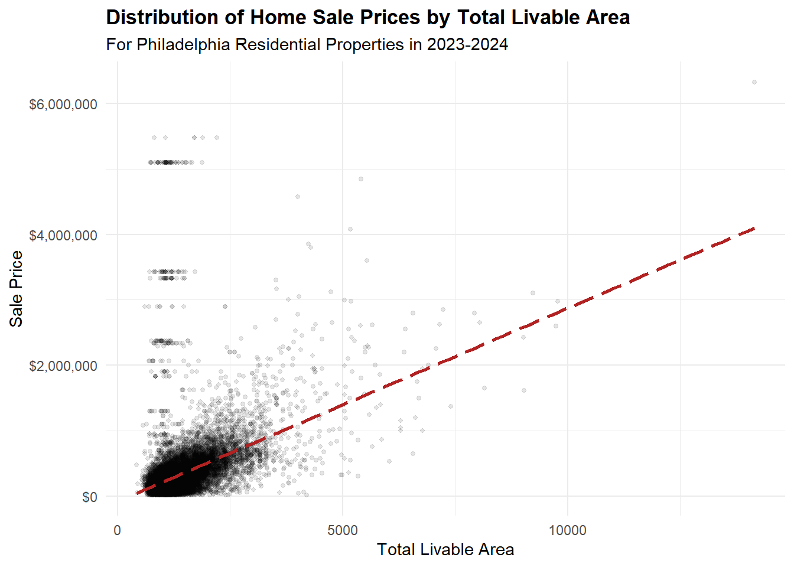
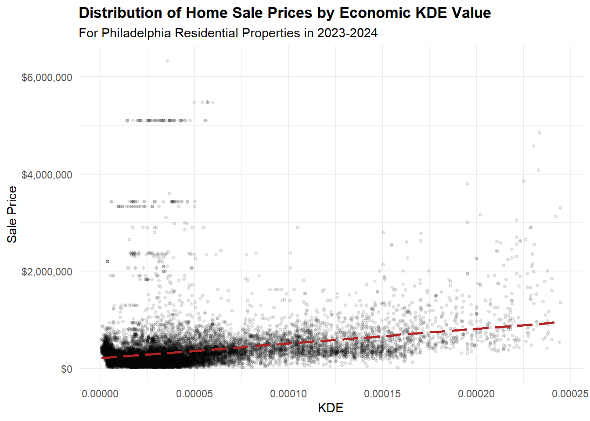
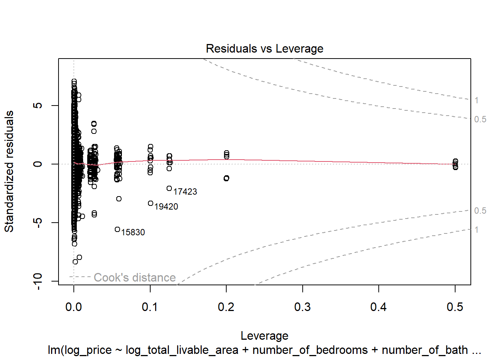
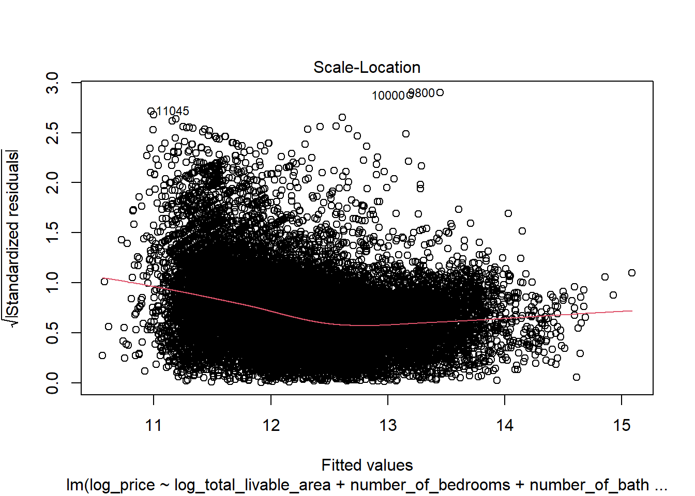
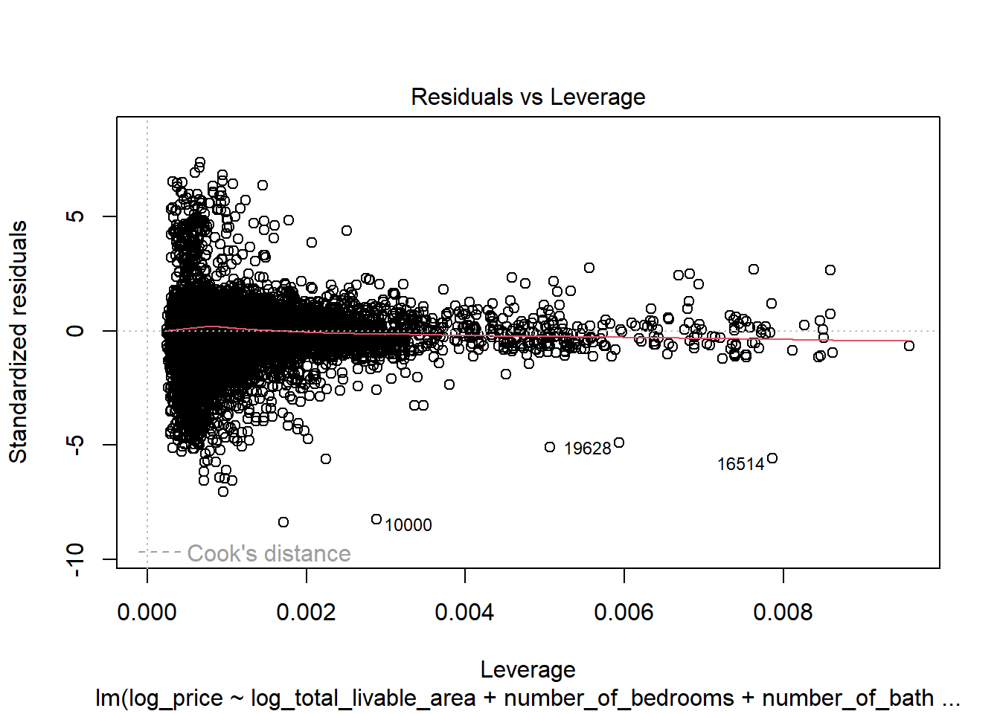

── Attaching core tidyverse packages ──────────────────────── tidyverse 2.0.0 ──
✔ dplyr 1.1.4 ✔ readr 2.1.5
✔ forcats 1.0.0 ✔ stringr 1.5.1
✔ ggplot2 3.5.2 ✔ tibble 3.3.0
✔ lubridate 1.9.4 ✔ tidyr 1.3.1
✔ purrr 1.1.0
── Conflicts ────────────────────────────────────────── tidyverse_conflicts() ──
✖ dplyr::filter() masks stats::filter()
✖ dplyr::lag() masks stats::lag()
ℹ Use the conflicted package (<http://conflicted.r-lib.org/>) to force all conflicts to become errors
载入程序包：'scales'
The following object is masked from 'package:purrr':
discard
The following object is masked from 'package:readr':
col_factor
Linking to GEOS 3.13.1, GDAL 3.11.0, PROJ 9.6.0; sf_use_s2() is TRUE
To enable caching of data, set `options(tigris_use_cache = TRUE)`
in your R script or .Rprofile.
here() starts at C:/Users/wensh/Desktop/MUSA5080-Midterm
Data (c) OpenStreetMap contributors, ODbL 1.0. https://www.openstreetmap.org/copyright.
Check the package website, https://docs.ropensci.org/osmextract/, for more details.
载入需要的程序包：spatstat.data
载入需要的程序包：spatstat.univar
spatstat.univar 3.1-4
spatstat.geom 3.6-0
载入程序包：'spatstat.geom'
The following object is masked from 'package:patchwork':
area
The following object is masked from 'package:scales':
rescale
载入需要的程序包：spatstat.random
spatstat.random 3.4-2
载入需要的程序包：spatstat.explore
载入需要的程序包：nlme
载入程序包：'nlme'
The following object is masked from 'package:dplyr':
collapse
spatstat.explore 3.5-3
载入需要的程序包：spatstat.model
载入需要的程序包：rpart
spatstat.model 3.4-2
载入需要的程序包：spatstat.linnet
spatstat.linnet 3.3-2
spatstat 3.4-1
For an introduction to spatstat, type 'beginner'
terra 1.8.60
载入程序包：'terra'
The following objects are masked from 'package:spatstat.geom':
area, delaunay, is.empty, rescale, rotate, shift, where.max,
where.min
The following object is masked from 'package:patchwork':
area
The following object is masked from 'package:tigris':
blocks
The following object is masked from 'package:scales':
rescale
The following object is masked from 'package:knitr':
spin
The following object is masked from 'package:tidyr':
extract
载入程序包：'jsonlite'
The following object is masked from 'package:purrr':
flatten
Please cite as:
Hlavac, Marek (2022). stargazer: Well-Formatted Regression and Summary Statistics Tables.
R package version 5.2.3. https://CRAN.R-project.org/package=stargazer
载入需要的程序包：carData
载入程序包：'car'
The following object is masked from 'package:spatstat.model':
bc
The following object is masked from 'package:spatstat.geom':
ellipse
The following object is masked from 'package:dplyr':
recode
The following object is masked from 'package:purrr':
some
载入需要的程序包：zoo
载入程序包：'zoo'
The following object is masked from 'package:terra':
time<-
The following objects are masked from 'package:base':
as.Date, as.Date.numericTechnical Appendix
PHASE 1: DATA PREPARATION
1.1 Load and Philadelphia house sales data
# Load Philly Property Sales data
phl_sales <- read_csv(here("data", "raw", "opa_properties_public.csv"))Warning: One or more parsing issues, call `problems()` on your data frame for details,
e.g.:
dat <- vroom(...)
problems(dat)Rows: 583776 Columns: 79
── Column specification ────────────────────────────────────────────────────────
Delimiter: ","
chr (38): basements, beginning_point, book_and_page, building_code, buildin...
dbl (31): objectid, category_code, census_tract, depth, exempt_building, ex...
lgl (7): cross_reference, date_exterior_condition, mailing_address_2, mark...
dttm (3): assessment_date, recording_date, sale_date
ℹ Use `spec()` to retrieve the full column specification for this data.
ℹ Specify the column types or set `show_col_types = FALSE` to quiet this message.Filter to residential properties, 2023-2024 sales
# Check data types
# glimpse(phl_sales)
phl_sales_res_23_24 <- phl_sales |>
filter(
category_code == 1, # Residential
year(sale_date) %in% c(2023, 2024), # 2023-24 sales
!is.na(category_code) & !is.na(sale_date) # Handle nulls
)Remove obvious errors
phl_sales_clean <- phl_sales_res_23_24 |>
filter(
# Some sale_price are unrealistically too low ($0, $1 etc.)
sale_price >= 10000,
# Exclude homes with 0 bathrooms
number_of_bathrooms > 0,
# Some areas are unrealistically low (0, 1, etc.)
total_area > 1,
# Some 0's remain in total_liveable_area after first area filter
total_livable_area > 0,
# Filter our unrealistic year built
year_built >= 1750
) Handle missing values
# Check how many features have NA values
# sum(is.na(phl_sales_clean$number_of_bedrooms))
# sum(is.na(phl_sales_clean$number_of_bathrooms))
# sum(is.na(phl_sales_clean$total_livable_area))
# sum(is.na(phl_sales_clean$year_built))
# Remove the 2 observations with NA values for number of bedrooms
phl_sales_clean <- phl_sales_clean |>
filter(
!is.na(number_of_bedrooms)
)Preliminary Feature Engineering: Age = sale date - year built
phl_sales_clean <- phl_sales_clean |>
mutate(
sale_year = year(sale_date),
age = sale_year - year_built
)Document all cleaning decisions
Our methodology for cleaning the Philadelphia home sales data is to focus on the features used in our model. As a group, we decided on the following independent variables to consider in our data exploration and model building to be: number of bathrooms, number of bedrooms, total livable area, and year built. We recognize that there is some risk of collinearity between these structural features, which will later be monitored and addressed if needed in the model building stage. Additionally, we also had to clean the sales price column since this is the variable we aim to predict in our model.
Filter for only residential properties & sales made in 2023-24 (per instructions).
Filter for realistic sales price >= $10,000.
Filter for houses with at least 1 bathroom. We will keep observations where number of bedrooms = 0 as this likely signifies a studio apartment. However, it is not feasible for homes to have zero bathrooms, so we will enforce a constraint that a home must have at least 1 bathroom to preserve data integrity.
Filter for realistic total area > 1 sq ft & realistic total livable area > 0 sq ft.
Filter for year built >= 1750 (some homes were built in year 0).
Handle missing values: We removed any missing values in our dependent variable of sales price, since it is crucial we have a true and accurate measure for prediction. We also checked which of our predictor variables had NA values after filtering. Only number of bedrooms had 2 remaining NA values. The rest had no NA values. To remedy this, we will remove the 2 observations from our data. Note, if there was substantial missing values in our predictors, we could use strategies such as imputing the NA values with the mean or median to use when building our model.
Preliminary feature engineering: Rather than using year built in our Automated Valuation Model, it makes more sense to create a new variable age that is equal to the sale date minus the year built. The age variable is often easier to interpret in exploratory plots with the newer houses appearing on the left and older ones on the right. This is primarily a stylistic preference: the overall pattern of the data will remain the same but mirrored.
1.2 Load Secondary Data
Census
Purpose: Pull demographic and housing data at the census tract level for Philadelphia from the 2023 5-year ACS. This data will provide predictors for neighborhood characteristics in our modeling.
Variables Collected:
Median household income (B19013)
Percentage of family households (B11001)
Education attainment: percent of population 25+ with a bachelor’s degree or higher (B15003)
Housing vacancy rate (B25002)
Racial composition: percent white (B02001)
Load Philly Census Data from Previously Retrieved Files
# Relative to project root
census_path <- here("data", "Philly Census")
census_csv_path <- file.path(census_path, "philly_tract_metrics.csv")
census_shp_path <- file.path(census_path, "philly_tract.shp")
# Csv with census tract Geo IDs and metrics
philly_censustract <- read_csv(census_csv_path, show_col_types = FALSE)
# Shp File including geometry
philly_tract_sf <- st_read(census_shp_path, quiet = TRUE)Observe Summary Statistics from target metrics.x
numeric_vars <- c("median_income", "pct_white", "pct_bachelors", "pct_vacant")
philly_censustract %>%
select(all_of(numeric_vars)) %>%
summary() median_income pct_white pct_bachelors pct_vacant
Min. : 13721 Min. : 0.000 Min. : 1.504 Min. : 0.000
1st Qu.: 42469 1st Qu.: 8.826 1st Qu.:16.094 1st Qu.: 5.366
Median : 60817 Median :34.740 Median :28.426 Median : 8.516
Mean : 66877 Mean :37.944 Mean :36.325 Mean : 9.844
3rd Qu.: 85298 3rd Qu.:64.202 3rd Qu.:55.345 3rd Qu.: 12.801
Max. :192727 Max. :95.513 Max. :96.632 Max. :100.000
NA's :27 NA's :17 NA's :17 NA's :19 A quick check of the census variables reveals some missing values and lower than epected values in median income. We will note this information but retain the missing values for now to maintain the full pitcure of census blocks.
Cleaning Methodology (Census)
Median income: Selected only the estimate column and renamed it for clarity.
Household composition: Pivoted ACS table to wide format, then calculated total households and family households.
Education: Pivoted to wide format, summed relevant categories to compute percent of population with a bachelor’s degree or higher.
Vacancy: Pivoted to wide format, calculated percent of homes vacant (vacant_units / total_units * 100).
Racial composition: Pivoted to wide format, computed percent white.
Merging: Combined all datasets by GEOID to create a single dataframe philly_blockgroup with all variables.
Geometry: Pulled census tract shapefiles with ACS geometry and merged with philly_blockgroup to create philly_bg_map.
Neighborhood (Polygon)
Reading in Philadelphia Neighborhoods as a shp object. This will allow us to aggregate data on neighborhoods to identify catagorical metrics.
neighborhood_folder <- here("data", "philadelphia-neighborhoods")
neighborhood_path <- file.path(neighborhood_folder, "philadelphia-neighborhoods.shp")
# Read the shapefile
philly_neighborhoods <- st_read(neighborhood_path, quiet = TRUE)
head(philly_neighborhoods)Simple feature collection with 6 features and 5 fields
Geometry type: POLYGON
Dimension: XY
Bounding box: xmin: -75.23049 ymin: 39.98491 xmax: -75.0156 ymax: 40.11269
Geodetic CRS: WGS 84
NAME LISTNAME MAPNAME Shape_Leng Shape_Area
1 BRIDESBURG Bridesburg Bridesburg 27814.55 44586264
2 BUSTLETON Bustleton Bustleton 48868.46 114050424
3 CEDARBROOK Cedarbrook Cedarbrook 20021.42 24871745
4 CHESTNUT_HILL Chestnut Hill Chestnut Hill 56394.30 79664975
5 EAST_FALLS East Falls East Falls 27400.78 40576888
6 MOUNT_AIRY_EAST Mount Airy, East East Mount Airy 28845.55 43152470
geometry
1 POLYGON ((-75.06773 40.0054...
2 POLYGON ((-75.0156 40.09487...
3 POLYGON ((-75.18848 40.0727...
4 POLYGON ((-75.21221 40.0860...
5 POLYGON ((-75.18476 40.0282...
6 POLYGON ((-75.18087 40.0432...Commercial and office points of interests (Amenities)(alternative at line 360 if you do not want to download pbf data)
# downloading osm data from geofabrik:https://download.geofabrik.de/north-america/us-northeast.html
#input_pbf <- "the pdf file downloaded from the link above"
# get boundary of Philadelphia County
pa_counties <- counties(state = "PA", year = 2023)
# Filter to Philadelphia County
philly_boundary <- subset(pa_counties, NAME == "Philadelphia")
# read the full OSM PBF (you can select layer types like points, lines, polygons)
poi <- oe_read(input_pbf,
boundary = philly_boundary,
boundary_type = "clipsrc",
layer = "points") # or "lines" / "multipolygons"
keywords <- c("shop","amenity","office","historic","tourism","healthcare",
"building","leisure")
pattern <- paste0(keywords, collapse = "|")
# ==== Filter by 'other_tags' ====
if ("other_tags" %in% names(poi)) {
poi$other_tags <- iconv(as.character(poi$other_tags), from = "", to = "UTF-8", sub = "")
poi$other_tags[is.na(poi$other_tags)] <- ""
poi_filtered <- poi %>%
filter(grepl(pattern, other_tags, ignore.case = TRUE))
cat("filtered POIs found:", nrow(poi_filtered), "of", nrow(poi), "\n")
} ###Alternative: filtered POI if you donot want to download osm data
poi_path <- here("data", "filtered poi")
poi_shp_path=file.path(poi_path, "philadelphia_poi_filtered.shp")
poi=st_read(poi_shp_path)Reading layer `philadelphia_poi_filtered' from data source
`C:\Users\wensh\Desktop\MUSA5080-Midterm\data\filtered poi\philadelphia_poi_filtered.shp'
using driver `ESRI Shapefile'
Simple feature collection with 11161 features and 10 fields
Geometry type: POINT
Dimension: XY
Bounding box: xmin: -75.27472 ymin: 39.87383 xmax: -74.95777 ymax: 40.13445
Geodetic CRS: WGS 84Kernel Density Rasters (Economic activities density)
Instead of using distance to CBD, we extracted commercial and office points of interests from OpenStreetMap (OSM), and we opreate a Kernel Density Estimation (KDE) with a bandwidth of 300 meters. By doing that, we manage to get a surface of density of economic activities across the whole city. The higher the KDE value is, the more economic activities it will be, implying a higher likelyhood of the area as a city centers.
There are several benefits using this approach compared to distance to CBD. First, with the development of suburbanization, even within the context of Philadelphia County, there is still a shift from monocentric model to polycentric model, meaning there multiple centers/subcenters. Using one CBD fail to capture these subcenters, which may also influence housing price. Second, CBD is an area rather than a point, distance method fail to capture this while the continuous surface computed by KDE would have a value of economic activities across the whole city.
# get boundary of Philadelphia County
pa_counties <- counties(state = "PA", year = 2023)
# Filter to Philadelphia County
philly_boundary <- subset(pa_counties, NAME == "Philadelphia")
philly_boundary <- st_transform(philly_boundary, 2272)
poi <- st_transform(poi, 2272)
# ==== Prepare point pattern ====
# Convert sf points to spatstat ppp object
win <- as.owin(st_union(philly_boundary)) # window from county boundary
coords <- st_coordinates(poi)
pp <- ppp(x = coords[,1], y = coords[,2], window = win)Warning: data contain duplicated points# ==== Run Kernel Density Estimation ====
# Sigma = bandwidth in map units (here, meters)
density_map <- density.ppp(pp, sigma = 300* 3.28084, edge = TRUE, at = "pixels",eps = c(100, 100))
# ==== Convert to raster ====
r_Economic <- rast(density_map)
crs(r_Economic) <- st_crs(philly_boundary)$proj4string
r_Economic <- mask(r_Economic, vect(philly_boundary))Education
We used two datasets from OpenDataPhilly.com to identify schools geolocation and populated the metrics off Attendance percent and Withdrawal volumes from those schools.
# Relative to project root
education_path <- here("data", "Education")
education_csv_path <- file.path(education_path, "philadelphia_schools.csv")
education_shp_path <- file.path(education_path, "Schools Shape", "Schools.shp")
# Csv with School Names and metrics
philly_schools <- read_csv(education_csv_path, show_col_types = FALSE)
# Shp File including geometry
philly_schools_sf <- st_read(education_shp_path, quiet = TRUE)We joined the csv file containing the metrics with the shp file containing geoloaction.
# Joining Schools csv metrics to shp file. Joined on 'location_i' (shp) and 'School_code (csv)
# Keeping metrics for Attendance and Withdrawals
# Select relevant metrics from CSV
school_metrics <- philly_schools %>%
select(School_code, Attendance, Withdrawals) %>%
mutate(School_code = as.character(School_code))
philly_schools_sf <- philly_schools_sf %>%
left_join(school_metrics,
by = c("location_i" = "School_code"))philly_schools_sf_clean <- philly_schools_sf %>%
filter(!is.na(Attendance) & !is.na(Withdrawals))names(philly_schools_sf_clean) [1] "aun" "school_num" "location_i" "school_nam" "school_n_1"
[6] "street_add" "zip_code" "phone_numb" "grade_leve" "grade_org"
[11] "enrollment" "type" "type_speci" "objectid" "Attendance"
[16] "Withdrawals" "geometry" nrow(philly_schools_sf_clean)[1] 204Once joined, we dropped rows that did not have values in Attendance and Withdrawal. This resulted in 204 public schools and their metrics located in Philadelphia City Limits.
###Tree density Location of trees data was extracted from Opendata Philly. A Kernel Density Estimation was used to estimate the density of trees. The higher the value is, the more trees there will be in this (and surronding) cell
tree_path <- here("data", "ppr_tree_inventory_2024")
tree_shp_path <- file.path(tree_path, "ppr_tree_inventory_2024.shp")
trees=st_read(tree_shp_path)Reading layer `ppr_tree_inventory_2024' from data source
`C:\Users\wensh\Desktop\MUSA5080-Midterm\data\ppr_tree_inventory_2024\ppr_tree_inventory_2024.shp'
using driver `ESRI Shapefile'
Simple feature collection with 151713 features and 6 fields
Geometry type: POINT
Dimension: XY
Bounding box: xmin: -8380434 ymin: 4847791 xmax: -8344373 ymax: 4885938
Projected CRS: WGS 84 / Pseudo-Mercatortrees=st_transform(trees,2272)
# Convert sf points to spatstat ppp object
coords_trees <- st_coordinates(trees)
pp_trees <- ppp(x = coords_trees[,1], y = coords_trees[,2], window = win)Warning: 355 points were rejected as lying outside the specified windowWarning: data contain duplicated points# ==== Run Kernel Density Estimation ====
# Sigma = bandwidth in map units (here, meters)
density_map_trees <- density.ppp(pp_trees, edge = TRUE, at = "pixels",eps = c(100, 100))
# ==== Convert to raster ====
r_trees <- rast(density_map_trees)
crs(r_trees) <- st_crs(philly_boundary)$proj4string
r_trees <- mask(r_trees, vect(philly_boundary)) # mask to county boundaryJoining data together
First, since commercial and office POI and trees are point data, and the more they cluster the higher the housing price will be. As a result, we use Kernel Density method to estimate the density of them. Value of the cell was assign to the point (housing prices), if the point falls within it.
Second, as census tracts and neighborhood are polygon data, a st_within spatial join was used to join them with housing data. Values from polygon data will assign to the points when points fall within it.
# Geometry - Cenus Data Merge
philly_tract_sf$GEOID=as.numeric(philly_tract_sf$GEOID)
philly_tract_map <- philly_tract_sf %>%
left_join(philly_censustract, by = "GEOID")
#convert housing prices data into point data
phl_sales_clean_sf = phl_sales_clean%>%
mutate(geometry = st_as_sfc(shape)) %>% # parse WKT into geometry
st_as_sf(crs = 2272)
#convert and match the crs
philly_schools_sf_clean=philly_schools_sf_clean%>%
st_transform(2272)
philly_neighborhoods=philly_neighborhoods%>%
st_transform(2272)
philly_tract_map=philly_tract_map%>%
st_transform(2272)
#merge them together
phl_sales_clean_sf_final=phl_sales_clean_sf%>%
st_join(philly_tract_map,join=st_within)%>%
st_join(philly_neighborhoods,join = st_within)
phl_sales_clean_sf_final <- st_transform(phl_sales_clean_sf_final, crs = st_crs(r_trees))
phl_sales_clean_sf_final$EconKDE <- raster::extract(r_Economic,phl_sales_clean_sf_final)
phl_sales_clean_sf_final$TreeKDE <- raster::extract(r_trees, phl_sales_clean_sf_final)
phl_sales_clean_sf_final=phl_sales_clean_sf_final%>%
st_transform(2272)Summary table before and after dimensions
before_after_summary <- data.frame(
Stage = c("Raw Data",
"After Residential Filter (2023–24)",
"After Removing Errors & NAs",
"After Spatial Joins & Final Cleaning"),
Rows = c(nrow(phl_sales),
nrow(phl_sales_res_23_24),
nrow(phl_sales_clean),
nrow(phl_sales_clean_sf_final)),
Columns = c(ncol(phl_sales),
ncol(phl_sales_res_23_24),
ncol(phl_sales_clean),
ncol(phl_sales_clean_sf_final))
)
knitr::kable(before_after_summary, caption = "Table A1. Data dimensions before and after cleaning")| Stage | Rows | Columns |
|---|---|---|
| Raw Data | 583776 | 79 |
| After Residential Filter (2023–24) | 34567 | 79 |
| After Removing Errors & NAs | 22034 | 81 |
| After Spatial Joins & Final Cleaning | 22034 | 106 |
PHASE 2: EXPLORATORY DATA ANALYSIS
Distribution of sale prices (histogram)
# Calculate the median / mean to plot
price_median <- median(phl_sales_clean$sale_price, na.rm = TRUE)
ggplot(phl_sales_clean, aes(sale_price)) +
geom_histogram(bins = 60, fill = "darkseagreen3", color = "black") +
geom_vline(xintercept = price_median, linetype = 5) +
annotate("text",
x = price_median,
y = 6300,
label = "Median",
hjust = -0.2,
color = "black",
size = 3) +
scale_x_continuous(labels = label_dollar()) +
labs(title = "Distribution of Home Sale Prices",
subtitle = "For Philadelphia Residential Properties in 2023-2024",
x = "Sale Price",
y = "Count") +
theme_minimal() +
theme(
plot.title = element_text(face = "bold")
)
Interpretation: The histogram plot above shows the full distribution of home sale prices for residential properties in 2023-2024 from our cleaned dataset. The data is extremely right-skewed, highlighting a majority of prices under $500,000 with a long tail of more expensive homes thereafter. The main issue with the extreme outliers of home prices exceeding $5 million that make the visibility of this plot hard to interpret. Also, there are major gaps at higher sales prices as we see the data become more spread out, further indicating the presence of outliers. Therefore, to remedy this, we will plot a second histogram of the price distribution, excluding the top 5% of sales prices from the original cleaned dataset.
# Create new df, filtering out the top 5% of house prices (outliers)
price_95_perc <- quantile(phl_sales_clean$sale_price, 0.95, na.rm = TRUE)
df_95_exclude <- filter(phl_sales_clean, sale_price <= price_95_perc)
# Calculate the median / mean to plot from trimmed distribution
price_median_95_exc <- median(df_95_exclude$sale_price, na.rm = TRUE)
price_mean_95_exc <- mean(df_95_exclude$sale_price, na.rm = TRUE)
ggplot(df_95_exclude, aes(sale_price)) +
geom_histogram(bins = 20, fill = "darkseagreen3", color = "black") +
geom_vline(xintercept = price_mean_95_exc, linetype = 5) +
geom_vline(xintercept = price_median_95_exc, linetype = 5) +
annotate("text",
x = price_mean_95_exc,
y = 2400,
label = "Mean",
hjust = - 0.1,
color = "black",
size = 3) +
annotate("text",
x = price_median_95_exc,
y = 2450,
label = "Median",
hjust = 1.25,
color = "black",
size = 3) +
scale_x_continuous(labels = label_dollar()) +
labs(
title = "Distribution of Home Sale Prices",
subtitle = "For Philadelphia Residential Properties in 2023-2024",
caption = "Histogram and median/mean statistics were computed on filtered sample (sale price ≤ 95th percentile) for better visibility.",
x = "Sale Price",
y = "Count") +
theme_minimal() +
theme(
plot.title = element_text(face = "bold")
) 
Interpretation: In this revised histogram, we get a much better sense of how the sales prices are distributed without the presence of extreme outliers. As we saw before, the data is definitely right-skewed since the median ($235,250) is less than the mean ($322,231) even when removing large outliers from the top 5% of the distribution. We can visualize that the standard housing market in Philadelphia from 2023-2024 ranges between $0 and $800,000. The distribution has a single peak around $200,000, indicating that it is unimodal with a typical (or most common) home sale price in the realm of $150,000 to $250,000. This is an indication that it may be best to omit these significant outliers from our dataset when building our model for home sale price prediction. The homes on the higher end of the sale price distribution are determined by a combination of structural features (such total livable area) and spatial features (such as nearby city centers) that drive up the prices of these homes. The goal of this study is to determine what features, both structural and spatial, are significant in predicting home sale prices in Philadelphia and create an accurate model to help policy makers in valuating property tax assessments.
Geographic distribution of sales price by tract
library(tmap)
price_95_perc <- quantile(phl_sales_clean$sale_price, 0.95, na.rm = TRUE)
df_95_exclude <- phl_sales_clean %>%
filter(sale_price <= price_95_perc)
df_95_exclude_sf <- df_95_exclude %>%
mutate(geometry = st_as_sfc(shape)) %>%
st_as_sf(crs = 2272) %>%
st_join(philly_tract_map, join = st_within)
tract_price_summary <- df_95_exclude_sf %>%
st_drop_geometry() %>%
group_by(GEOID) %>%
summarize(median_price = median(sale_price, na.rm = TRUE))
philly_price_map <- philly_tract_map %>%
left_join(tract_price_summary, by = "GEOID")
tmap_mode("plot")ℹ tmap mode set to "plot".price_map <- tm_shape(philly_price_map) +
tm_polygons(
col = "median_price",
style = "quantile",
n = 5,
palette = "YlGnBu",
title = "Median Sale Price (≤ 95th Percentile)"
) +
tm_layout(
main.title = "Median Home Sale Prices by Census Tract (Filtered to ≤ 95th Percentile)",
main.title.position = "center",
main.title.fontface = "bold",
outer.margins = c(0.10, 0.02, 0.02, 0.02),
legend.outside = TRUE
) +
tm_shape(df_95_exclude_sf) +
tm_dots(
col = "gray30",
alpha = 0.3,
size = 0.02,
legend.show = FALSE
)
── tmap v3 code detected ───────────────────────────────────────────────────────
[v3->v4] `tm_polygons()`: instead of `style = "quantile"`, use fill.scale =
`tm_scale_intervals()`.
ℹ Migrate the argument(s) 'style', 'n', 'palette' (rename to 'values') to
'tm_scale_intervals(<HERE>)'[v3->v4] `tm_polygons()`: use 'fill' for the fill color of polygons/symbols
(instead of 'col'), and 'col' for the outlines (instead of 'border.col').[v3->v4] `tm_polygons()`: migrate the argument(s) related to the legend of the
visual variable `fill` namely 'title' to 'fill.legend = tm_legend(<HERE>)'[v3->v4] `tm_layout()`: use `tm_title()` instead of `tm_layout(main.title = )`[v3->v4] `tm_dots()`: use `fill_alpha` instead of `alpha`.[v3->v4] `tm_dots()`: use `fill.legend = tm_legend_hide()` instead of
`legend.show = FALSE`.[tm_dots()] Argument `legend.show` unknown.price_map[cols4all] color palettes: use palettes from the R package cols4all. Run
`cols4all::c4a_gui()` to explore them. The old palette name "YlGnBu" is named
"brewer.yl_gn_bu"
Multiple palettes called "yl_gn_bu" found: "brewer.yl_gn_bu", "matplotlib.yl_gn_bu". The first one, "brewer.yl_gn_bu", is returned.
[plot mode] fit legend/component: Some legend items or map compoments do not
fit well, and are therefore rescaled.
ℹ Set the tmap option `component.autoscale = FALSE` to disable rescaling.
Interpretation:
This visualization shows clear spatial clustering of home prices in Philadelphia when looking at the typical market excluding outliers. Higher median prices are concentrated in Center City, University City, and select neighborhoods in South Philadelphia and Northwest Philadelphia. This supports our need to include additional predictors to account amenity density and economic activity.
Distribution of median income by neighborhood
census_points <- st_centroid(philly_tract_map)Warning: st_centroid assumes attributes are constant over geometriespoints_joined <- st_join(census_points, philly_neighborhoods)
mean_income_by_neighborhood <- points_joined %>%
st_drop_geometry() %>%
group_by(MAPNAME) %>%
summarise(mean_income = mean(median_income, na.rm = TRUE))
philly_neighborhood_income <- philly_neighborhoods %>%
left_join(mean_income_by_neighborhood, by = "MAPNAME")
library(tmap)
tmap_mode("plot")ℹ tmap mode set to "plot".neighborhood_income_map <- tm_shape(philly_neighborhood_income) +
tm_polygons(
col = "mean_income",
style = "quantile",
n = 5,
palette = "YlOrRd",
title = "Median Household Income"
) +
tm_layout(
main.title = "Median Household Income by Neighborhood",
main.title.position = "center",
outer.margins = c(0.10, 0.02, 0.02, 0.02), # <-- more top padding
legend.outside = TRUE
)
── tmap v3 code detected ───────────────────────────────────────────────────────
[v3->v4] `tm_polygons()`: instead of `style = "quantile"`, use fill.scale =
`tm_scale_intervals()`.
ℹ Migrate the argument(s) 'style', 'n', 'palette' (rename to 'values') to
'tm_scale_intervals(<HERE>)'[v3->v4] `tm_polygons()`: migrate the argument(s) related to the legend of the
visual variable `fill` namely 'title' to 'fill.legend = tm_legend(<HERE>)'[v3->v4] `tm_layout()`: use `tm_title()` instead of `tm_layout(main.title = )`neighborhood_income_map[cols4all] color palettes: use palettes from the R package cols4all. Run
`cols4all::c4a_gui()` to explore them. The old palette name "YlOrRd" is named
"brewer.yl_or_rd"
Multiple palettes called "yl_or_rd" found: "brewer.yl_or_rd", "matplotlib.yl_or_rd". The first one, "brewer.yl_or_rd", is returned.
[plot mode] fit legend/component: Some legend items or map compoments do not
fit well, and are therefore rescaled.
ℹ Set the tmap option `component.autoscale = FALSE` to disable rescaling.
Interpretation:
In this visualization depicting median incomes of residents by neighborhoods, we observe continued spatial clustering of wealth indicators in areas like Center City, Northwest Philadelphia, and South Philadlephia. This is consistent with the basic aggregation of home sale prices on census tracts. The presence of high income in tandem with high housing cost serves as an indication of their relationship and justifies the use of economic predictors in our model. With this spatial auto-correlation, it is important that the model absorbs spatial variation by utilizing additional spatial features.
Price vs. structural features
1. Number of Bathrooms
ggplot(phl_sales_clean, aes(x = factor(number_of_bathrooms), y = sale_price)) +
geom_boxplot(fill = "lightcyan2", outlier.color = "firebrick", outlier.alpha = 0.2) +
scale_y_continuous(labels = scales::label_dollar()) +
labs(title = "Distribution of Home Sale Prices by Number of Bathrooms",
subtitle = "For Philadelphia Residential Properties in 2023-2024",
x = "Bathrooms",
y = "Sale Price") +
theme_minimal() +
theme(
plot.title = element_text(face = "bold")
)
Interpretation: Since number of bathrooms is a discrete variable, a scatter plot is not suitable to visualize this predictor’s relationship with the target variable of sale price; therefore, we opted to use box plots instead. In this first plot, we see a distinct positive relationship between number of bathrooms and home sale price. Intuitively, this makes sense since homes with more bathrooms should on average sell at higher prices. Another trend is that there are more outliers in homes with less bathrooms (between 1 and 3). These outliers are likely due to external spatial factors such as neighborhoods. Housing prices tend to surge in highly desirable neighborhoods such as Rittenhouse Square, which explains the presence of many outliers plotted above the upper bound of these boxplots. Another trend is that variance of sale prices begins to significantly widen for homes with more than 3 bedrooms. This suggests that larger homes with more bathrooms experience more price dispersion relative to those with less bathrooms. Lastly, it is worth noting that there are very few observations of homes with 8 or 12 bathrooms, indicating that it would be beneficial to remove them from our dataset to better capture the true relationship between price and number of bathrooms.
ggplot(phl_sales_clean, aes(x = factor(number_of_bathrooms), y = log(sale_price))) +
geom_boxplot(fill = "lightcyan2", outlier.color = "firebrick", outlier.alpha = 0.2) +
scale_y_continuous(labels = scales::label_dollar()) +
labs(title = "Distribution of Log(Home Sale Prices) by Number of Bathrooms",
subtitle = "For Philadelphia Residential Properties in 2023-2024",
x = "Bathrooms",
y = "Log(Sale Price)") +
theme_minimal() +
theme(
plot.title = element_text(face = "bold")
)
Interpretation: In addition, we also plotted with the y-axis transformed to the log of sales price. We notice that there is still a positive relationship that appears more linear than the first plot. The log transformation helps reduce the effect of extreme outliers by compressing the distribution of house sale prices. This transformation also serves to center the distributions as noted by the presence of both positive and negative outliers. These benefits suggest that log-transforming our target variable for a linear regression is the best suitable method to yield an accurate model.
2. Number of Bedrooms
ggplot(phl_sales_clean, aes(x = factor(number_of_bedrooms), y = sale_price)) +
geom_boxplot(fill = "lightcyan2", outlier.color = "firebrick", outlier.alpha = 0.2) +
scale_y_continuous(labels = scales::label_dollar()) +
labs(title = "Distribution of Home Sale Prices by Number of Bedrooms",
subtitle = "For Philadelphia Residential Properties in 2023-2024",
x = "Bedrooms",
y = "Sale Price") +
theme_minimal() +
theme(
plot.title = element_text(face = "bold")
)
Interpretation: The above plot to measure the relationship between home sale price and number of bedrooms is positive, indicating that homes with more bedrooms tend to sell at higher prices. However, this relationship looks significantly less strong than the relationship between sale price and number of bathrooms. We observe many outliers across homes with various bedroom sizes, most notably those with 2 - 5 bedrooms. The intuition is that these size households are more likely to be sold on the market with higher variability in sales prices, particularly in the upper tail, demonstrating right-skew. These high outliers represent luxury properties that sell for abnormally high sale prices due to other external variables like neighborhood, size etc. Again, we have a small number of very large homes with 10, 11, and 12 bedrooms that are candidates for removal before building our model.
ggplot(phl_sales_clean, aes(x = factor(number_of_bedrooms), y = log(sale_price))) +
geom_boxplot(fill = "lightcyan2", outlier.color = "firebrick", outlier.alpha = 0.2) +
scale_y_continuous(labels = scales::label_dollar()) +
labs(title = "Distribution of Log(Home Sale Prices) by Number of Bedrooms",
subtitle = "For Philadelphia Residential Properties in 2023-2024",
x = "Bedrooms",
y = "Log(Sale Price)") +
theme_minimal() +
theme(
plot.title = element_text(face = "bold")
)
Interpretation: As before, we can log-transform the target variable log(sale price) to better visualize the relationship with number of bedrooms. We still see a positive relationship that appears more linear than in our earlier plot. As before, the log-transformation stabilizes the variance to mitigate outliers and centers the data demonstrated by outliers at both the upper and lower tails. The strength of the relationship still appears to be not as obvious as with the number of bathrooms. In other words, number of bathrooms may be a more suitable predictor of sale price from these EDA observations. To avoid the risk of multicollinearity, we will keep this finding in mind when determining what structural features should be included in our final model.
3. Total Livable Area
ggplot(phl_sales_clean, aes(x = total_livable_area, sale_price)) +
geom_point(alpha = 0.1, size = 1) +
geom_smooth(method = "lm", se = FALSE, linetype = 5, color = "firebrick") +
scale_y_continuous(labels = label_dollar()) +
labs(title = "Distribution of Home Sale Prices by Total Livable Area",
subtitle = "For Philadelphia Residential Properties in 2023-2024",
x = "Total Livable Area",
y = "Sale Price") +
theme_minimal() +
theme(
plot.title = element_text(face = "bold")
)`geom_smooth()` using formula = 'y ~ x'
Interpretation: The plot represents the relationship between the non-transformed target sale price and predictor total livable area. We can see that the relationship to be positive with evidence of heavy right-skew with the majority of data points clustered in the bottom-left with less than 3000 sq ft of area and $500,000 price. Also, we notice that although the relationship is positive, it does not appear to be linear, a violation of a crucial assumption in linear regression. As before, there is the presence of luxury homes as large outliers that can pull the regression line upward, which would create biased estimates on model coefficients.
ggplot(phl_sales_clean, aes(x = log(total_livable_area), log(sale_price))) +
geom_point(alpha = 0.075, size = 1) +
geom_smooth(method = "lm", se = FALSE, linetype = 5, color = "firebrick") +
scale_y_continuous(labels = label_dollar()) +
labs(title = "Distribution of Log(Home Sale Prices) by Total Livable Area",
subtitle = "For Philadelphia Residential Properties in 2023-2024",
x = "Log(Total Livable Area)",
y = "Log(Sale Price)") +
theme_minimal() +
theme(
plot.title = element_text(face = "bold")
)`geom_smooth()` using formula = 'y ~ x'Interpretation: By log-transforming both sale price and total livable area, we visualize a relationship that appears much more linear. As we saw before, there seem to be more variability in homes with smaller areas that are more common in this dataset. The transformation has more of a uniform, symmetric spread of points above and below the regression line. We can interpret this relationship as increasing the percentage of total livable area will lead to some constant increase in the percentage of sale price with this transformation. We should keep at mind that the non-constant variance is alarming for potential heteroskedasticity in our model. Again, through the log-transformation of our target variable, we observe a more linear relationship, strengthening the notion for the need for this transformation in our modeling phase.
4. Age (Sale Date - Year Built)
ggplot(phl_sales_clean, aes(x = age, y = sale_price)) +
geom_point(alpha = 0.076, size = 1) +
scale_y_continuous(labels = label_dollar()) +
labs(title = "Distribution of Home Sale Prices by Age",
subtitle = "For Philadelphia Residential Properties in 2023-2024",
x = "Age",
y = "Sale Price") +
theme_minimal() +
theme(
plot.title = element_text(face = "bold")
)
Interpretation: In the above plot, it does not reveal any significant relationship between sale price and home age. The main issue is that most of the data is clustered at the bottom of the figure at low sale prices regardless of age. There are some noticeable outliers along with increased variability for middle-aged homes around 75 to 125 years old. In general, it seems that there newer homes (lower age) demonstrate somewhat higher price levels on average. However, from this plot alone, it is difficult to verify.
ggplot(phl_sales_clean, aes(x = age, log(sale_price))) +
geom_point(alpha = 0.075, size = 1) +
geom_smooth(method = "loess", span = 0.75, se = FALSE, color = "firebrick") +
scale_y_continuous(labels = label_dollar()) +
labs(title = "Distribution of Log(Home Sale Prices) by Age",
subtitle = "For Philadelphia Residential Properties in 2023-2024",
x = "Age",
y = "Log(Sale Price)") +
theme_minimal() +
theme(
plot.title = element_text(face = "bold")
)`geom_smooth()` using formula = 'y ~ x'Interpretation: After doing the trick to log-transform sale price, we see an interesting shape that somewhat resembles a crucial theory we learned in lecture. This theory outlines that Age has a U-shaped effect on price. Newer homes are sought after due to recent construction with more modern amenities, whereas very old homes are considered to have historic value or charm. The middle-aged homes are therefore the least desirable homes that likely are not modernized with significant wear and tear without the allure of a historic home. While this theory makes sense, it somewhat breaks down for these middle aged homes as their sale prices experience much more variability, which would make our model more at risk of heteroskedasticity. This is likely due to a majority of samples in our dataset within this range whose sale price cannot be explained by age alone. Therefore, it is wise to proceed with caution with using the age variable in building our predictive model.
df_age_groups <- phl_sales_clean |>
mutate(
age_group = case_when(
age < 20 ~ "New (<20 years)",
age < 80 ~ "Middle (20–80 years)",
age >= 80 ~ "Historic (>80 years)"
),
age_group = factor(age_group, levels = c("New (<20 years)", "Middle (20–80 years)", "Historic (>80 years)"))
)
ggplot(df_age_groups, aes(age_group, log(sale_price))) +
geom_boxplot(fill = "lightcyan2", outlier.colour = "firebrick", outlier.alpha = 0.2) +
labs(
title = "Distribution of Log(Sale Price) by Age Group",
subtitle = "Philadelphia Residential Sales in 2023–2024",
x = "Age Group", y = "log(Sale Price)",
) +
theme_minimal() +
theme(
plot.title = element_text(face = "bold")
)
Interpretation: When we engineer a new age group feature, the U-shaped distribution does not appear to be valid in the case of our dataset. Using the age segmentations defined in class, it now appears as there is an inverse (negative) relationship between log(sale price) and age group, not a U-shape distribution. One hypothesis is that very old buildings in Philadelphia are too worn down or don’t hold enough historic value to counteract its age. Whatever the reason may be, it seems that engineering a feature for age group is preferred over using age directly and to expect increasing age to a home to depreciate its value over time.
Price vs. spatial features
ggplot(phl_sales_clean_sf_final, aes(x = EconKDE$lyr.1, y=sale_price)) +
geom_point(alpha = 0.1, size = 1) +
geom_smooth(method = "lm", se = FALSE, linetype = 5, color = "firebrick") +
scale_y_continuous(labels = label_dollar()) +
labs(title = "Distribution of Home Sale Prices by Economic KDE Value",
subtitle = "For Philadelphia Residential Properties in 2023-2024",
x = "KDE",
y = "Sale Price") +
theme_minimal() +
theme(
plot.title = element_text(face = "bold")
)`geom_smooth()` using formula = 'y ~ x'Warning: Removed 3 rows containing non-finite outside the scale range
(`stat_smooth()`).Warning: Removed 3 rows containing missing values or values outside the scale range
(`geom_point()`).
Interpretation: The plot represents the relationship between the non-transformed target sale price and predictor KDE for economic activities. We can see that the relationship to be positive with evidence of heavy right-skew with the majority of data points clustered in the bottom-left with less than a KDE value of 0.000075 and $500,000 price. Also, we notice that although the relationship is positive, it does not appear to be linear, a violation of a crucial assumption in linear regression. It seems that the trend increases first till about 0.00008 and then decreases. As before, there is the presence of some homes as large outliers that can pull the regression line upward, which would create biased estimates on model coefficients.
One creative visualization
Interpretation:
PHASE 3: FEATURE ENGINEERING
Final Data Cleaning from Structural EDA
# 99th percentile of sales prices to remove
price_99_perc <- quantile(phl_sales_clean$sale_price, 0.99, na.rm = TRUE)
# Relevant columns to keep for modeling
rel_columns <- c(
# Location / Shape
"census_tract", "shape", "location", "zip_code",
# Target
"sale_price", "log_price",
# Regressors (and potential ones)
"total_livable_area", "log_total_livable_area",
"number_of_bedrooms", "number_of_bathrooms",
"year_built", "age", "age_group",
"interior_condition", "quality_grade"
)
phl_sales_final <- phl_sales_clean |>
filter(
# Remove top 1% of sale price (extreme outliers)
# This creates an upper bound of around $2 million rather than $6 million to further reduce outlier effects in modeling
sale_price < price_99_perc,
# Remove bathrooms > 7
number_of_bathrooms < 8,
# Remove bedrooms > 9
number_of_bedrooms < 10
)|>
mutate(
# Log of sale price
log_price = log(sale_price),
# Log of total livable area
log_total_livable_area = log(total_livable_area),
# Age group buckets (new, middle_age, historic)
age_group = case_when(
age < 20 ~ "New (<20)",
age <= 80 ~ "Middle (20–80)",
age > 80 ~ "Historic (>80)"
),
# For modeling as dummy variables
age_group = factor(age_group, levels = c("New (<20)", "Middle (20–80)", "Historic (>80)"))
) |>
# Select relevant columns
select(any_of(rel_columns))
#convert housing prices data into point data
phl_sales_final_sf = phl_sales_final%>%
mutate(geometry = st_as_sfc(shape)) %>% # parse WKT into geometry
st_as_sf(crs = 2272)
#convert and match the crs
philly_schools_sf_final=philly_schools_sf_clean%>%
st_transform(2272)
philly_neighborhoods=philly_neighborhoods%>%
st_transform(2272)
philly_tract_map=philly_tract_map%>%
st_transform(2272)
#merge them together
phl_sales_final_sf_final=phl_sales_final_sf%>%
st_join(philly_tract_map,join=st_within)%>%
st_join(philly_neighborhoods,join = st_within)
phl_sales_final_sf_final <- st_transform(phl_sales_final_sf_final, crs = st_crs(r_trees))
phl_sales_final_sf_final$EconKDE <- raster::extract(r_Economic,phl_sales_final_sf_final)
phl_sales_final_sf_final$TreeKDE <- raster::extract(r_trees, phl_sales_final_sf_final)
phl_sales_final_sf_final=phl_sales_final_sf_final%>%
st_transform(2272)Classifying Neighborhood
#convert census tract into points
census_points=st_centroid(philly_tract_map)Warning: st_centroid assumes attributes are constant over geometriespoints_joined <- st_join(census_points, philly_neighborhoods)
# Calculate mean MHI for each polygon
mean_mhi_by_poly <- points_joined %>%
st_drop_geometry() %>%
group_by(MAPNAME) %>%
summarise(meanMHI = mean(median_income, na.rm = TRUE))
# Join the result back to the polygon layer
phl_sales_final_sf_final <- phl_sales_final_sf_final %>%
left_join(mean_mhi_by_poly, by = "MAPNAME")%>%
st_as_sf()
# reclassify the neighborhood data based on quantile (25%)
phl_sales_final_sf_final$MHI_quantile <- cut(
phl_sales_final_sf_final$meanMHI,
breaks = quantile(
phl_sales_final_sf_final$meanMHI,
probs = seq(0, 1, 0.25),
na.rm = TRUE
),
include.lowest = TRUE,
labels = c("Q1 (lowest)", "Q2", "Q3", "Q4 (highest)")
)Calculating distance to schools using K-nearest method
# Compute distance matrix
dist_matrix <- st_distance(phl_sales_final_sf_final, philly_schools_sf_final)
# Extract the 3 smallest distances for each point
nearest_3 <- apply(dist_matrix, 1, function(x) sort(x)[1:3])
# Get the average or total distance if needed
mean_nearest3 <- apply(dist_matrix, 1, function(x) mean(sort(x)[1:3]))
phl_sales_final_sf_final$mean_3nn_dist <- mean_nearest3Summary table
#reformat raster data into a "readable" format by stargazer
phl_sales_final_sf_final <- phl_sales_final_sf_final %>%
mutate(EconKDE = EconKDE$lyr.1,
TreeKDE = TreeKDE$lyr.1)
#exclude the unnecessary data
summary_data <- phl_sales_final_sf_final %>%
st_drop_geometry() %>%
select(-c(
census_tract, shape, NAME.x, NAME.y, MAPNAME,
Shape_Area, Shape_Leng, location, zip_code, GEOID,
variabl, age_group, quality_grade, LISTNAME, MHI_quantile,
estimat,moe,pct_bch,pct_vcn,pct_wht,mdn_ncm,fmly_hh,totl_hh
))
# Keep only numeric columns
summary_numeric <- summary_data %>%
select(where(is.numeric))
summary_numeric_df <- as.data.frame(summary_numeric)
# Save as HTML locally
stargazer(summary_numeric_df,
type = "html",
title = "Summary Statistics",
digits = 2,
summary.stat = c("n", "mean", "sd", "min", "median", "max"),
covariate.labels = c("Sale Price", "Log Price", "Total Livable Area",
"Log Total Livable Area", "Bedrooms", "Bathrooms",
"Year Built", "Age", "Interior Condition",
"Median Income","Family HH",
"Total HH", "% Bachelors", "% Vacant", "% White",
"Econ KDE", "Tree KDE", "Mean MHI",
"Mean 3 closest School Dist"),
out = "summary_statistics.html")
<table style="text-align:center"><caption><strong>Summary Statistics</strong></caption>
<tr><td colspan="7" style="border-bottom: 1px solid black"></td></tr><tr><td style="text-align:left">Statistic</td><td>N</td><td>Mean</td><td>St. Dev.</td><td>Min</td><td>Median</td><td>Max</td></tr>
<tr><td colspan="7" style="border-bottom: 1px solid black"></td></tr><tr><td style="text-align:left">Sale Price</td><td>21,807</td><td>289,078.80</td><td>245,777.60</td><td>10,000</td><td>235,000</td><td>2,285,000</td></tr>
<tr><td style="text-align:left">Log Price</td><td>21,807</td><td>12.28</td><td>0.81</td><td>9.21</td><td>12.37</td><td>14.64</td></tr>
<tr><td style="text-align:left">Total Livable Area</td><td>21,807</td><td>1,363.18</td><td>534.22</td><td>420</td><td>1,216</td><td>9,038</td></tr>
<tr><td style="text-align:left">Log Total Livable Area</td><td>21,807</td><td>7.16</td><td>0.31</td><td>6.04</td><td>7.10</td><td>9.11</td></tr>
<tr><td style="text-align:left">Bedrooms</td><td>21,807</td><td>3.07</td><td>0.71</td><td>0</td><td>3</td><td>9</td></tr>
<tr><td style="text-align:left">Bathrooms</td><td>21,807</td><td>1.43</td><td>0.67</td><td>1</td><td>1</td><td>7</td></tr>
<tr><td style="text-align:left">Year Built</td><td>21,807</td><td>1,937.29</td><td>29.78</td><td>1,750</td><td>1,925</td><td>2,025</td></tr>
<tr><td style="text-align:left">Age</td><td>21,807</td><td>86.21</td><td>29.78</td><td>-2</td><td>98</td><td>274</td></tr>
<tr><td style="text-align:left">Interior Condition</td><td>21,806</td><td>3.40</td><td>0.93</td><td>1</td><td>4</td><td>7</td></tr>
<tr><td style="text-align:left">Median Income</td><td>21,546</td><td>66,489.29</td><td>30,604.07</td><td>13,721</td><td>60,957</td><td>192,727</td></tr>
<tr><td style="text-align:left">Family HH</td><td>21,805</td><td>1,095.76</td><td>434.94</td><td>0</td><td>1,054</td><td>2,484</td></tr>
<tr><td style="text-align:left">Total HH</td><td>21,805</td><td>1,945.64</td><td>602.97</td><td>0</td><td>1,911</td><td>3,713</td></tr>
<tr><td style="text-align:left">% Bachelors</td><td>21,802</td><td>32.42</td><td>22.73</td><td>1.50</td><td>26.33</td><td>94.84</td></tr>
<tr><td style="text-align:left">% Vacant</td><td>21,800</td><td>9.33</td><td>5.93</td><td>0.00</td><td>8.23</td><td>32.88</td></tr>
<tr><td style="text-align:left">% White</td><td>21,802</td><td>38.14</td><td>29.94</td><td>0.00</td><td>35.22</td><td>95.51</td></tr>
<tr><td style="text-align:left">Econ KDE</td><td>21,804</td><td>0.0000</td><td>0.0000</td><td>0.00</td><td>0.0000</td><td>0.0000</td></tr>
<tr><td style="text-align:left">Tree KDE</td><td>21,804</td><td>0.0000</td><td>0.0000</td><td>0.0000</td><td>0.0000</td><td>0.0001</td></tr>
<tr><td style="text-align:left">Mean MHI</td><td>21,459</td><td>66,651.63</td><td>27,950.13</td><td>18,646.00</td><td>59,779.14</td><td>168,021.00</td></tr>
<tr><td style="text-align:left">Mean 3 closest School Dist</td><td>21,805</td><td>2,598.76</td><td>1,190.85</td><td>336.99</td><td>2,363.89</td><td>11,109.39</td></tr>
<tr><td colspan="7" style="border-bottom: 1px solid black"></td></tr></table># Print as txt in R
stargazer(summary_numeric_df,
type = "text",
title = "Summary Statistics",
digits = 2,
summary.stat = c("n", "mean", "sd", "min", "median", "max"),
covariate.labels = c("Sale Price", "Log Price", "Total Livable Area",
"Log Total Livable Area", "Bedrooms", "Bathrooms",
"Year Built", "Age", "Interior Condition",
"Median Income","Family HH",
"Total HH", "% Bachelors", "% Vacant", "% White",
"Econ KDE", "Tree KDE", "Mean MHI",
"Mean 3 closest School Dist"))
Summary Statistics
======================================================================================
Statistic N Mean St. Dev. Min Median Max
--------------------------------------------------------------------------------------
Sale Price 21,807 289,078.80 245,777.60 10,000 235,000 2,285,000
Log Price 21,807 12.28 0.81 9.21 12.37 14.64
Total Livable Area 21,807 1,363.18 534.22 420 1,216 9,038
Log Total Livable Area 21,807 7.16 0.31 6.04 7.10 9.11
Bedrooms 21,807 3.07 0.71 0 3 9
Bathrooms 21,807 1.43 0.67 1 1 7
Year Built 21,807 1,937.29 29.78 1,750 1,925 2,025
Age 21,807 86.21 29.78 -2 98 274
Interior Condition 21,806 3.40 0.93 1 4 7
Median Income 21,546 66,489.29 30,604.07 13,721 60,957 192,727
Family HH 21,805 1,095.76 434.94 0 1,054 2,484
Total HH 21,805 1,945.64 602.97 0 1,911 3,713
% Bachelors 21,802 32.42 22.73 1.50 26.33 94.84
% Vacant 21,800 9.33 5.93 0.00 8.23 32.88
% White 21,802 38.14 29.94 0.00 35.22 95.51
Econ KDE 21,804 0.0000 0.0000 0.00 0.0000 0.0000
Tree KDE 21,804 0.0000 0.0000 0.0000 0.0000 0.0001
Mean MHI 21,459 66,651.63 27,950.13 18,646.00 59,779.14 168,021.00
Mean 3 closest School Dist 21,805 2,598.76 1,190.85 336.99 2,363.89 11,109.39
--------------------------------------------------------------------------------------Final Cleaning Before Building the Model
for_model_building <- phl_sales_final_sf_final %>%
st_drop_geometry() %>%
select(-c(
census_tract, shape, NAME.x, NAME.y,
Shape_Area, Shape_Leng, location, zip_code, GEOID,
variabl, LISTNAME,
estimat,moe,pct_bch,pct_vcn,pct_wht,mdn_ncm,fmly_hh,totl_hh
))Justification of feature engineered variables
We have used a number of methods to create spatial features in both Phase 1 and 3. First, in Phase 1, since commercial and office POI and trees are point data, and the more they cluster the higher the housing price will be. As a result, we use Kernel Density method to estimate the density of them. Value of the cell was assign to the point (housing prices), if the point falls within it.
Second, as census tracts and neighborhood are polygon data, a st_within spatial join was used to join them with housing data. Values from polygon data will assign to the points when points fall within it.
Third, as there are too many neighborhoods, it is hard to interpret the coefficient of them as it is a categorical variable. We reclassify it with four different categories based on quantile of MHI(25%). To calculate the MHI each neighborhood, we first take the centroid of each census tract and summarize them within each neighborhood. Then we take the mean of MHI of the tracts that fall within the neighborhood.
Lastly, different from poi and trees, a high cluster of schools may not reflect a high housing price. As a result, instead of using density estimation, we use 3-nearest distance and take the mean to capture some of the closest schools.
#Phase 4: Model Building
####create train/test data first (make workflow smoother)
set.seed(123)
n <- nrow(for_model_building)
# 70% training, 30% testing
train_indices <- sample(1:n, size = 0.7 * n)
train_data <- for_model_building[train_indices, ]
test_data <- for_model_building[-train_indices, ]###Building the model progressively ####Model 1: Individual characteristic only
#run regression based on houses own characteristic
options(scipen = 999)
model1=lm(log_price~log_total_livable_area+number_of_bedrooms+number_of_bathrooms+age
+interior_condition+quality_grade,data=for_model_building)
summary(model1)
Call:
lm(formula = log_price ~ log_total_livable_area + number_of_bedrooms +
number_of_bathrooms + age + interior_condition + quality_grade,
data = for_model_building)
Residuals:
Min 1Q Median 3Q Max
-3.9177 -0.3081 0.0803 0.3908 3.4233
Coefficients:
Estimate Std. Error t value Pr(>|t|)
(Intercept) 6.2999874 0.2126295 29.629 < 0.0000000000000002 ***
log_total_livable_area 0.9805519 0.0228959 42.826 < 0.0000000000000002 ***
number_of_bedrooms -0.1538913 0.0081175 -18.958 < 0.0000000000000002 ***
number_of_bathrooms 0.2655967 0.0088561 29.990 < 0.0000000000000002 ***
age -0.0020033 0.0001711 -11.709 < 0.0000000000000002 ***
interior_condition -0.1940613 0.0054605 -35.539 < 0.0000000000000002 ***
quality_grade5 -0.7390910 0.4705778 -1.571 0.11629
quality_gradeA 0.0251645 0.1751658 0.144 0.88577
quality_gradeA- 0.0295263 0.1814730 0.163 0.87075
quality_gradeA+ 0.0611624 0.2121474 0.288 0.77312
quality_gradeB 0.0320486 0.1524305 0.210 0.83347
quality_gradeB- 0.1265652 0.1516088 0.835 0.40383
quality_gradeB+ -0.0474156 0.1571845 -0.302 0.76292
quality_gradeC -0.1452483 0.1498012 -0.970 0.33225
quality_gradeC- -0.1027752 0.1517525 -0.677 0.49825
quality_gradeC+ -0.0267014 0.1500292 -0.178 0.85874
quality_gradeD 0.1473498 0.1572472 0.937 0.34874
quality_gradeD- -0.2209235 0.3197212 -0.691 0.48958
quality_gradeD+ 0.2265099 0.1814849 1.248 0.21201
quality_gradeE -0.4206165 0.2143947 -1.962 0.04979 *
quality_gradeE- -0.6936639 0.2495913 -2.779 0.00545 **
quality_gradeE+ -0.3686049 0.2496201 -1.477 0.13978
quality_gradeS 0.0710844 0.4709353 0.151 0.88002
quality_gradeX- 0.3722878 0.4722638 0.788 0.43053
---
Signif. codes: 0 '***' 0.001 '**' 0.01 '*' 0.05 '.' 0.1 ' ' 1
Residual standard error: 0.6313 on 21245 degrees of freedom
(因为不存在，538个观察量被删除了)
Multiple R-squared: 0.3771, Adjusted R-squared: 0.3764
F-statistic: 559.2 on 23 and 21245 DF, p-value: < 0.00000000000000022#check colinearity
vif(model1) GVIF Df GVIF^(1/(2*Df))
log_total_livable_area 2.559182 1 1.599744
number_of_bedrooms 1.754091 1 1.324421
number_of_bathrooms 1.745491 1 1.321170
age 1.137622 1 1.066594
interior_condition 1.196302 1 1.093756
quality_grade 1.631892 18 1.013697#vif looks fine, check heteroskedasticity
bptest(model1)
studentized Breusch-Pagan test
data: model1
BP = 881.72, df = 23, p-value < 0.00000000000000022#p-value is way too small, implying more variables may be needed (make sense)
#calculate the RMSE
model_train_1 <- lm(log_price~log_total_livable_area+number_of_bedrooms+number_of_bathrooms+age+interior_condition+quality_grade,data = train_data)
test_predictions_1 <- predict(model_train_1, newdata = test_data)
rmse_test_1 <- sqrt(mean((test_data$log_price - test_predictions_1)^2,na.rm = TRUE))
rmse_train_1 <- summary(model_train_1)$sigma
plot(model1)


In residual plot, more observations are clustered when fitted value is lower, indicating bad distribution of residuals and nonlinearity.
Same issue is reflected in Q-Q plot as well, the unlinearity revels the distribution of residual is not normal.
There is also heteroskedasticity, as the scale location shows, the line is not linear at all.
The outliers seems to have small influence on the leverage,as the line is almost linear shown in the last graph
####Model 2: add census variables into regression
options(scipen = 999)
model2=lm(log_price~log_total_livable_area+number_of_bedrooms+number_of_bathrooms+age
+interior_condition+median_income+I(family_hh/total_hh)
+pct_bachelors+pct_vacant+pct_white+quality_grade ,data=for_model_building)
summary(model2)
Call:
lm(formula = log_price ~ log_total_livable_area + number_of_bedrooms +
number_of_bathrooms + age + interior_condition + median_income +
I(family_hh/total_hh) + pct_bachelors + pct_vacant + pct_white +
quality_grade, data = for_model_building)
Residuals:
Min 1Q Median 3Q Max
-4.0624 -0.1965 0.0620 0.2672 3.4712
Coefficients:
Estimate Std. Error t value Pr(>|t|)
(Intercept) 8.1058037963 0.1728369352 46.899 < 0.0000000000000002
log_total_livable_area 0.5538846916 0.0187767976 29.498 < 0.0000000000000002
number_of_bedrooms 0.0023439696 0.0066684851 0.351 0.72522
number_of_bathrooms 0.1663096478 0.0071583003 23.233 < 0.0000000000000002
age -0.0015366030 0.0001464531 -10.492 < 0.0000000000000002
interior_condition -0.1714564249 0.0044711059 -38.348 < 0.0000000000000002
median_income 0.0000006343 0.0000002553 2.484 0.01299
I(family_hh/total_hh) 0.1443236566 0.0352559283 4.094 0.0000426
pct_bachelors 0.0098889478 0.0003722161 26.568 < 0.0000000000000002
pct_vacant -0.0166358372 0.0006790400 -24.499 < 0.0000000000000002
pct_white 0.0060401571 0.0001902132 31.755 < 0.0000000000000002
quality_grade5 -0.4344933604 0.3739074939 -1.162 0.24523
quality_gradeA 0.1107178862 0.1393149268 0.795 0.42678
quality_gradeA- 0.0700769181 0.1443339817 0.486 0.62731
quality_gradeA+ 0.1136545224 0.1687270806 0.674 0.50057
quality_gradeB 0.0975160749 0.1212863598 0.804 0.42140
quality_gradeB- 0.1799630519 0.1206855192 1.491 0.13593
quality_gradeB+ 0.0245424614 0.1250391566 0.196 0.84439
quality_gradeC 0.1650394170 0.1193943723 1.382 0.16689
quality_gradeC- 0.1301253997 0.1209034284 1.076 0.28182
quality_gradeC+ 0.1870692517 0.1195349845 1.565 0.11760
quality_gradeD 0.1868565185 0.1253851839 1.490 0.13617
quality_gradeD- -0.0812834412 0.2541690364 -0.320 0.74912
quality_gradeD+ 0.3987094613 0.1444507895 2.760 0.00578
quality_gradeE -0.0531677446 0.1704506786 -0.312 0.75510
quality_gradeE- 0.1439129539 0.2137544484 0.673 0.50079
quality_gradeE+ -0.0010031690 0.1985273954 -0.005 0.99597
quality_gradeS 0.3750806992 0.3742472792 1.002 0.31625
quality_gradeX- 0.0436059017 0.3755434914 0.116 0.90756
(Intercept) ***
log_total_livable_area ***
number_of_bedrooms
number_of_bathrooms ***
age ***
interior_condition ***
median_income *
I(family_hh/total_hh) ***
pct_bachelors ***
pct_vacant ***
pct_white ***
quality_grade5
quality_gradeA
quality_gradeA-
quality_gradeA+
quality_gradeB
quality_gradeB-
quality_gradeB+
quality_gradeC
quality_gradeC-
quality_gradeC+
quality_gradeD
quality_gradeD-
quality_gradeD+ **
quality_gradeE
quality_gradeE-
quality_gradeE+
quality_gradeS
quality_gradeX-
---
Signif. codes: 0 '***' 0.001 '**' 0.01 '*' 0.05 '.' 0.1 ' ' 1
Residual standard error: 0.5016 on 20981 degrees of freedom
(因为不存在，797个观察量被删除了)
Multiple R-squared: 0.604, Adjusted R-squared: 0.6035
F-statistic: 1143 on 28 and 20981 DF, p-value: < 0.00000000000000022#number of bedroom becomes statistical insignificant after controling census variable
#check colinearity
vif(model2) GVIF Df GVIF^(1/(2*Df))
log_total_livable_area 2.698470 1 1.642702
number_of_bedrooms 1.852123 1 1.360927
number_of_bathrooms 1.789763 1 1.337820
age 1.315849 1 1.147105
interior_condition 1.251877 1 1.118873
median_income 5.077347 1 2.253297
I(family_hh/total_hh) 1.903464 1 1.379661
pct_bachelors 5.954738 1 2.440233
pct_vacant 1.356028 1 1.164486
pct_white 2.696400 1 1.642072
quality_grade 1.776112 18 1.016084#edu_attainment and mhi may have muticolinearity
bptest(model2)
studentized Breusch-Pagan test
data: model2
BP = 1068.9, df = 28, p-value < 0.00000000000000022#p-value is way too small, implying more variables may be needed (make sense)
#calculate the RMSE
model_train_2 <- lm(log_price~log_total_livable_area+number_of_bedrooms
+number_of_bathrooms+age+interior_condition+median_income
+I(family_hh/total_hh)
+pct_bachelors+pct_vacant+pct_white
+quality_grade,data = train_data)
test_predictions_2 <- predict(model_train_2, newdata = test_data)
rmse_test_2 <- sqrt(mean((test_data$log_price - test_predictions_2)^2,na.rm = TRUE))
rmse_train_2 <- summary(model_train_2)$sigma
plot(model2)

The residual plot for model 2 looks much better than that in model 1. The number of observations are clustered when fitted value is lower decreases, indicating better distribution of residuals. The non-linearity issue also gets better
Q-Q plot still does not look good, especially for the outliers. It seems that outliers is influencing the normality of residuals
There is also heteroskedasticity, as the scale location shows, the line is not linear at all.
The outlier seems to have small influence on the leverage,as the line is almost linear shown in the last graph
####Model 3: add spatial variables into regression
options(scipen = 999)
model3=lm(log_price~log_total_livable_area+number_of_bedrooms+number_of_bathrooms+age
+interior_condition+median_income+I(family_hh/total_hh)
+pct_bachelors+pct_vacant+pct_white+EconKDE+I(EconKDE^2)+TreeKDE
+mean_3nn_dist+quality_grade,data=for_model_building)
summary(model3)
Call:
lm(formula = log_price ~ log_total_livable_area + number_of_bedrooms +
number_of_bathrooms + age + interior_condition + median_income +
I(family_hh/total_hh) + pct_bachelors + pct_vacant + pct_white +
EconKDE + I(EconKDE^2) + TreeKDE + mean_3nn_dist + quality_grade,
data = for_model_building)
Residuals:
Min 1Q Median 3Q Max
-4.0763 -0.1967 0.0608 0.2656 3.4935
Coefficients:
Estimate Std. Error t value
(Intercept) 8.3783299532 0.1740881213 48.127
log_total_livable_area 0.5346093571 0.0187760802 28.473
number_of_bedrooms 0.0011989834 0.0066624020 0.180
number_of_bathrooms 0.1637190315 0.0071411581 22.926
age -0.0014209099 0.0001532852 -9.270
interior_condition -0.1775947631 0.0045024707 -39.444
median_income 0.0000009704 0.0000002578 3.764
I(family_hh/total_hh) 0.0331453924 0.0370507956 0.895
pct_bachelors 0.0115939901 0.0004236876 27.364
pct_vacant -0.0132797438 0.0007638695 -17.385
pct_white 0.0050023781 0.0002087814 23.960
EconKDE -15860.6841109123 2421.6438376466 -6.550
I(EconKDE^2) 688762600.4846765995 85099552.5541760921 8.094
TreeKDE -2341.5837838513 380.4441607759 -6.155
mean_3nn_dist 0.0000022820 0.0000037513 0.608
quality_grade5 -0.4575975628 0.3725192300 -1.228
quality_gradeA 0.1078678888 0.1387476044 0.777
quality_gradeA- 0.0920255443 0.1437689440 0.640
quality_gradeA+ 0.1149432705 0.1680622891 0.684
quality_gradeB 0.1124835660 0.1208036189 0.931
quality_gradeB- 0.1950381512 0.1202029379 1.623
quality_gradeB+ 0.0515740734 0.1245540491 0.414
quality_gradeC 0.1774362098 0.1189221051 1.492
quality_gradeC- 0.1384615299 0.1204398684 1.150
quality_gradeC+ 0.1987228541 0.1190544047 1.669
quality_gradeD 0.2119521212 0.1249195598 1.697
quality_gradeD- -0.0652079614 0.2531473729 -0.258
quality_gradeD+ 0.4061542964 0.1438730055 2.823
quality_gradeE -0.0115059364 0.1698254695 -0.068
quality_gradeE- 0.1816007844 0.2129403013 0.853
quality_gradeE+ 0.0303578692 0.1977577410 0.154
quality_gradeS 0.4097776542 0.3727778195 1.099
quality_gradeX- -0.0047947570 0.3742122086 -0.013
Pr(>|t|)
(Intercept) < 0.0000000000000002 ***
log_total_livable_area < 0.0000000000000002 ***
number_of_bedrooms 0.857184
number_of_bathrooms < 0.0000000000000002 ***
age < 0.0000000000000002 ***
interior_condition < 0.0000000000000002 ***
median_income 0.000168 ***
I(family_hh/total_hh) 0.371015
pct_bachelors < 0.0000000000000002 ***
pct_vacant < 0.0000000000000002 ***
pct_white < 0.0000000000000002 ***
EconKDE 0.00000000005904720 ***
I(EconKDE^2) 0.00000000000000061 ***
TreeKDE 0.00000000076502707 ***
mean_3nn_dist 0.542976
quality_grade5 0.219316
quality_gradeA 0.436908
quality_gradeA- 0.522119
quality_gradeA+ 0.494025
quality_gradeB 0.351798
quality_gradeB- 0.104696
quality_gradeB+ 0.678827
quality_gradeC 0.135704
quality_gradeC- 0.250309
quality_gradeC+ 0.095097 .
quality_gradeD 0.089767 .
quality_gradeD- 0.796727
quality_gradeD+ 0.004762 **
quality_gradeE 0.945984
quality_gradeE- 0.393766
quality_gradeE+ 0.877997
quality_gradeS 0.271670
quality_gradeX- 0.989777
---
Signif. codes: 0 '***' 0.001 '**' 0.01 '*' 0.05 '.' 0.1 ' ' 1
Residual standard error: 0.4995 on 20976 degrees of freedom
(因为不存在，798个观察量被删除了)
Multiple R-squared: 0.6074, Adjusted R-squared: 0.6068
F-statistic: 1014 on 32 and 20976 DF, p-value: < 0.00000000000000022#percent of family hh become not significant, number of bedrooms become significant again
#check colinearity
vif(model3) GVIF Df GVIF^(1/(2*Df))
log_total_livable_area 2.720483 1 1.649389
number_of_bedrooms 1.863972 1 1.365273
number_of_bathrooms 1.795800 1 1.340074
age 1.453332 1 1.205542
interior_condition 1.279934 1 1.131342
median_income 5.218998 1 2.284513
I(family_hh/total_hh) 2.119492 1 1.455847
pct_bachelors 7.779040 1 2.789093
pct_vacant 1.730021 1 1.315303
pct_white 3.275071 1 1.809716
EconKDE 10.028263 1 3.166743
I(EconKDE^2) 7.116771 1 2.667728
TreeKDE 4.100250 1 2.024907
mean_3nn_dist 1.673421 1 1.293608
quality_grade 1.817878 18 1.016741#very sure edu_attainment and mhi may have muticolinearity, make sense EconKDE and its squared term have high vif score as we are taking quadratic term
bptest(model3)
studentized Breusch-Pagan test
data: model3
BP = 1136.8, df = 32, p-value < 0.00000000000000022#p-value is way too small, implying more variables may be needed
#calculate the RMSE
model_train_3 <- lm(log_price~log_total_livable_area+number_of_bedrooms+number_of_bathrooms+age
+interior_condition+median_income+I(family_hh/total_hh)
+pct_bachelors+pct_vacant+pct_white+EconKDE+I(EconKDE^2)+TreeKDE
+mean_3nn_dist+quality_grade,data = train_data)
test_predictions_3 <- predict(model_train_3, newdata = test_data)
rmse_test_3 <- sqrt(mean((test_data$log_price - test_predictions_3)^2,na.rm = TRUE))
rmse_train_3 <- summary(model_train_3)$sigma
plot(model3)

The residual plot for model 3 does not change that much compared to model 2. The majority of the issues remain…..
####Model 4: add fixed variable and interaction terms into regression
options(scipen = 999)
model4=lm(log_price~log_total_livable_area+number_of_bedrooms+number_of_bathrooms+age
+interior_condition+median_income+I(family_hh/total_hh)
+pct_bachelors+pct_vacant+pct_white+EconKDE+I(EconKDE^2)+TreeKDE
+mean_3nn_dist+MHI_quantile*age,data=for_model_building)
summary(model4)
Call:
lm(formula = log_price ~ log_total_livable_area + number_of_bedrooms +
number_of_bathrooms + age + interior_condition + median_income +
I(family_hh/total_hh) + pct_bachelors + pct_vacant + pct_white +
EconKDE + I(EconKDE^2) + TreeKDE + mean_3nn_dist + MHI_quantile *
age, data = for_model_building)
Residuals:
Min 1Q Median 3Q Max
-4.0161 -0.1883 0.0557 0.2501 3.5595
Coefficients:
Estimate Std. Error t value
(Intercept) 8.6125643428 0.1216159461 70.818
log_total_livable_area 0.5259124938 0.0169476595 31.032
number_of_bedrooms 0.0047629608 0.0064527918 0.738
number_of_bathrooms 0.1641674908 0.0067744636 24.233
age -0.0042623902 0.0004263922 -9.996
interior_condition -0.1589445783 0.0042365850 -37.517
median_income -0.0000001065 0.0000002627 -0.405
I(family_hh/total_hh) 0.0772305051 0.0360302644 2.143
pct_bachelors 0.0086856549 0.0004222698 20.569
pct_vacant -0.0110405035 0.0007461681 -14.796
pct_white 0.0046941087 0.0002196660 21.369
EconKDE 1835.6937320806 2401.2669301564 0.764
I(EconKDE^2) 149940588.0799231231 82710328.6550365835 1.813
TreeKDE -1444.8536167464 375.7923770221 -3.845
mean_3nn_dist 0.0000161774 0.0000037108 4.360
MHI_quantileQ2 0.1616120089 0.0513033653 3.150
MHI_quantileQ3 -0.0255255524 0.0472251379 -0.541
MHI_quantileQ4 (highest) -0.0976844912 0.0454156017 -2.151
age:MHI_quantileQ2 0.0011668614 0.0005459783 2.137
age:MHI_quantileQ3 0.0027411779 0.0004937926 5.551
age:MHI_quantileQ4 (highest) 0.0045408378 0.0004522698 10.040
Pr(>|t|)
(Intercept) < 0.0000000000000002 ***
log_total_livable_area < 0.0000000000000002 ***
number_of_bedrooms 0.460447
number_of_bathrooms < 0.0000000000000002 ***
age < 0.0000000000000002 ***
interior_condition < 0.0000000000000002 ***
median_income 0.685317
I(family_hh/total_hh) 0.032085 *
pct_bachelors < 0.0000000000000002 ***
pct_vacant < 0.0000000000000002 ***
pct_white < 0.0000000000000002 ***
EconKDE 0.444596
I(EconKDE^2) 0.069871 .
TreeKDE 0.000121 ***
mean_3nn_dist 0.0000130912 ***
MHI_quantileQ2 0.001634 **
MHI_quantileQ3 0.588853
MHI_quantileQ4 (highest) 0.031495 *
age:MHI_quantileQ2 0.032594 *
age:MHI_quantileQ3 0.0000000287 ***
age:MHI_quantileQ4 (highest) < 0.0000000000000002 ***
---
Signif. codes: 0 '***' 0.001 '**' 0.01 '*' 0.05 '.' 0.1 ' ' 1
Residual standard error: 0.4866 on 21175 degrees of freedom
(因为不存在，611个观察量被删除了)
Multiple R-squared: 0.6351, Adjusted R-squared: 0.6347
F-statistic: 1843 on 20 and 21175 DF, p-value: < 0.00000000000000022#percent of family hh become not significant, number of bedrooms become significant again
#check colinearity
vif(model4)there are higher-order terms (interactions) in this model
consider setting type = 'predictor'; see ?vif GVIF Df GVIF^(1/(2*Df))
log_total_livable_area 2.511143 1 1.584659
number_of_bedrooms 1.864867 1 1.365601
number_of_bathrooms 1.866932 1 1.366357
age 14.576046 1 3.817859
interior_condition 1.401352 1 1.183787
median_income 5.826827 1 2.413882
I(family_hh/total_hh) 2.143307 1 1.464004
pct_bachelors 8.315435 1 2.883650
pct_vacant 1.753757 1 1.324295
pct_white 3.872115 1 1.967769
EconKDE 10.646189 1 3.262850
I(EconKDE^2) 7.366401 1 2.714111
TreeKDE 4.295456 1 2.072548
mean_3nn_dist 1.766341 1 1.329038
MHI_quantile 4463.462105 3 4.057688
age:MHI_quantile 4544.316974 3 4.069847#very sure edu_attainment and mhi may have muticolinearity
#tree seems to be correlated with neighborhood (make sense)
#make sense EconKDE and its squared term have high vif score as we are taking quadratic term
bptest(model4)
studentized Breusch-Pagan test
data: model4
BP = 1196.6, df = 20, p-value < 0.00000000000000022#p-value is way too small, implying more variables may be needed
#calculate the RMSE
model_train_4 <- lm(log_price~log_total_livable_area+number_of_bedrooms+number_of_bathrooms+age
+interior_condition+median_income+I(family_hh/total_hh)
+pct_bachelors+pct_vacant+pct_white+EconKDE+I(EconKDE^2)+TreeKDE
+mean_3nn_dist+MHI_quantile*age,data = train_data)
test_predictions_4 <- predict(model_train_4, newdata = test_data)
rmse_test_4 <- sqrt(mean((test_data$log_price - test_predictions_4)^2,na.rm = TRUE))
rmse_train_4 <- summary(model_train_4)$sigma
plot(model4)

#one comparison table (RMSE, R² for 4 different models you constructed in your process)
rmse_values = c(rmse_test_1,rmse_test_2,rmse_test_3,rmse_test_4)
adj_r2 = c(
summary(model1)$adj.r.squared,
summary(model2)$adj.r.squared,
summary(model3)$adj.r.squared,
summary(model4)$adj.r.squared
)
model_summary <- data.frame(
Model = c("Model 1", "Model 2", "Model 3", "Model 4"),
RMSE = round(rmse_values, 3),
Adj_R2 = round(adj_r2, 3)
)
stargazer(model_summary,
type = "html",
title = "Model Performance Summary",
summary = FALSE,
rownames = FALSE,
out = "model_performance_summary.html")
<table style="text-align:center"><caption><strong>Model Performance Summary</strong></caption>
<tr><td colspan="3" style="border-bottom: 1px solid black"></td></tr><tr><td style="text-align:left">Model</td><td>RMSE</td><td>Adj_R2</td></tr>
<tr><td colspan="3" style="border-bottom: 1px solid black"></td></tr><tr><td style="text-align:left">Model 1</td><td>0.620</td><td>0.376</td></tr>
<tr><td style="text-align:left">Model 2</td><td>0.491</td><td>0.604</td></tr>
<tr><td style="text-align:left">Model 3</td><td>0.490</td><td>0.607</td></tr>
<tr><td style="text-align:left">Model 4</td><td>0.479</td><td>0.635</td></tr>
<tr><td colspan="3" style="border-bottom: 1px solid black"></td></tr></table>stargazer(model_summary,
type = "text",
title = "Model Performance Summary",
summary = FALSE,
rownames = FALSE)
Model Performance Summary
====================
Model RMSE Adj_R2
--------------------
Model 1 0.620 0.376
Model 2 0.491 0.604
Model 3 0.490 0.607
Model 4 0.479 0.635
--------------------#stargazer regression results
stargazer(model1,model2,model3,model4,
type = "html", #could be changed to text if needed
title = "Model Results",
dep.var.labels = c("Log of Sale Price"),
covariate.labels = c(
"Log(Total Livable Area)",
"Number of Bedrooms",
"Number of Bathrooms",
"Building Age",
"Interior Condition",
"Median Household Income",
"Family Household Share (Family HH / Total HH)",
"% Bachelor's Degree Holders",
"% Vacant Housing Units",
"% White Population",
"Economic Density (EconKDE)",
"Economic Density² (EconKDE²)",
"Tree Density (TreeKDE)",
"Mean 3-Nearest Neighbor Distance",
"Income Q2","Income Q3", "Income Q4"
),
omit.stat = c("f", "ser"),
digits = 3,
out = "regression.html")
<table style="text-align:center"><caption><strong>Model Results</strong></caption>
<tr><td colspan="5" style="border-bottom: 1px solid black"></td></tr><tr><td style="text-align:left"></td><td colspan="4"><em>Dependent variable:</em></td></tr>
<tr><td></td><td colspan="4" style="border-bottom: 1px solid black"></td></tr>
<tr><td style="text-align:left"></td><td colspan="4">Log of Sale Price</td></tr>
<tr><td style="text-align:left"></td><td>(1)</td><td>(2)</td><td>(3)</td><td>(4)</td></tr>
<tr><td colspan="5" style="border-bottom: 1px solid black"></td></tr><tr><td style="text-align:left">Log(Total Livable Area)</td><td>0.981<sup>***</sup></td><td>0.554<sup>***</sup></td><td>0.535<sup>***</sup></td><td>0.526<sup>***</sup></td></tr>
<tr><td style="text-align:left"></td><td>(0.023)</td><td>(0.019)</td><td>(0.019)</td><td>(0.017)</td></tr>
<tr><td style="text-align:left"></td><td></td><td></td><td></td><td></td></tr>
<tr><td style="text-align:left">Number of Bedrooms</td><td>-0.154<sup>***</sup></td><td>0.002</td><td>0.001</td><td>0.005</td></tr>
<tr><td style="text-align:left"></td><td>(0.008)</td><td>(0.007)</td><td>(0.007)</td><td>(0.006)</td></tr>
<tr><td style="text-align:left"></td><td></td><td></td><td></td><td></td></tr>
<tr><td style="text-align:left">Number of Bathrooms</td><td>0.266<sup>***</sup></td><td>0.166<sup>***</sup></td><td>0.164<sup>***</sup></td><td>0.164<sup>***</sup></td></tr>
<tr><td style="text-align:left"></td><td>(0.009)</td><td>(0.007)</td><td>(0.007)</td><td>(0.007)</td></tr>
<tr><td style="text-align:left"></td><td></td><td></td><td></td><td></td></tr>
<tr><td style="text-align:left">Building Age</td><td>-0.002<sup>***</sup></td><td>-0.002<sup>***</sup></td><td>-0.001<sup>***</sup></td><td>-0.004<sup>***</sup></td></tr>
<tr><td style="text-align:left"></td><td>(0.0002)</td><td>(0.0001)</td><td>(0.0002)</td><td>(0.0004)</td></tr>
<tr><td style="text-align:left"></td><td></td><td></td><td></td><td></td></tr>
<tr><td style="text-align:left">Interior Condition</td><td>-0.194<sup>***</sup></td><td>-0.171<sup>***</sup></td><td>-0.178<sup>***</sup></td><td>-0.159<sup>***</sup></td></tr>
<tr><td style="text-align:left"></td><td>(0.005)</td><td>(0.004)</td><td>(0.005)</td><td>(0.004)</td></tr>
<tr><td style="text-align:left"></td><td></td><td></td><td></td><td></td></tr>
<tr><td style="text-align:left">Median Household Income</td><td></td><td>0.00000<sup>**</sup></td><td>0.00000<sup>***</sup></td><td>-0.00000</td></tr>
<tr><td style="text-align:left"></td><td></td><td>(0.00000)</td><td>(0.00000)</td><td>(0.00000)</td></tr>
<tr><td style="text-align:left"></td><td></td><td></td><td></td><td></td></tr>
<tr><td style="text-align:left">Family Household Share (Family HH / Total HH)</td><td></td><td>0.144<sup>***</sup></td><td>0.033</td><td>0.077<sup>**</sup></td></tr>
<tr><td style="text-align:left"></td><td></td><td>(0.035)</td><td>(0.037)</td><td>(0.036)</td></tr>
<tr><td style="text-align:left"></td><td></td><td></td><td></td><td></td></tr>
<tr><td style="text-align:left">% Bachelor's Degree Holders</td><td></td><td>0.010<sup>***</sup></td><td>0.012<sup>***</sup></td><td>0.009<sup>***</sup></td></tr>
<tr><td style="text-align:left"></td><td></td><td>(0.0004)</td><td>(0.0004)</td><td>(0.0004)</td></tr>
<tr><td style="text-align:left"></td><td></td><td></td><td></td><td></td></tr>
<tr><td style="text-align:left">% Vacant Housing Units</td><td></td><td>-0.017<sup>***</sup></td><td>-0.013<sup>***</sup></td><td>-0.011<sup>***</sup></td></tr>
<tr><td style="text-align:left"></td><td></td><td>(0.001)</td><td>(0.001)</td><td>(0.001)</td></tr>
<tr><td style="text-align:left"></td><td></td><td></td><td></td><td></td></tr>
<tr><td style="text-align:left">% White Population</td><td></td><td>0.006<sup>***</sup></td><td>0.005<sup>***</sup></td><td>0.005<sup>***</sup></td></tr>
<tr><td style="text-align:left"></td><td></td><td>(0.0002)</td><td>(0.0002)</td><td>(0.0002)</td></tr>
<tr><td style="text-align:left"></td><td></td><td></td><td></td><td></td></tr>
<tr><td style="text-align:left">Economic Density (EconKDE)</td><td></td><td></td><td>-15,860.680<sup>***</sup></td><td>1,835.694</td></tr>
<tr><td style="text-align:left"></td><td></td><td></td><td>(2,421.644)</td><td>(2,401.267)</td></tr>
<tr><td style="text-align:left"></td><td></td><td></td><td></td><td></td></tr>
<tr><td style="text-align:left">Economic Density² (EconKDE²)</td><td></td><td></td><td>688,762,600.000<sup>***</sup></td><td>149,940,588.000<sup>*</sup></td></tr>
<tr><td style="text-align:left"></td><td></td><td></td><td>(85,099,553.000)</td><td>(82,710,329.000)</td></tr>
<tr><td style="text-align:left"></td><td></td><td></td><td></td><td></td></tr>
<tr><td style="text-align:left">Tree Density (TreeKDE)</td><td></td><td></td><td>-2,341.584<sup>***</sup></td><td>-1,444.854<sup>***</sup></td></tr>
<tr><td style="text-align:left"></td><td></td><td></td><td>(380.444)</td><td>(375.792)</td></tr>
<tr><td style="text-align:left"></td><td></td><td></td><td></td><td></td></tr>
<tr><td style="text-align:left">Mean 3-Nearest Neighbor Distance</td><td></td><td></td><td>0.00000</td><td>0.00002<sup>***</sup></td></tr>
<tr><td style="text-align:left"></td><td></td><td></td><td>(0.00000)</td><td>(0.00000)</td></tr>
<tr><td style="text-align:left"></td><td></td><td></td><td></td><td></td></tr>
<tr><td style="text-align:left">Income Q2</td><td>-0.739</td><td>-0.434</td><td>-0.458</td><td></td></tr>
<tr><td style="text-align:left"></td><td>(0.471)</td><td>(0.374)</td><td>(0.373)</td><td></td></tr>
<tr><td style="text-align:left"></td><td></td><td></td><td></td><td></td></tr>
<tr><td style="text-align:left">Income Q3</td><td>0.025</td><td>0.111</td><td>0.108</td><td></td></tr>
<tr><td style="text-align:left"></td><td>(0.175)</td><td>(0.139)</td><td>(0.139)</td><td></td></tr>
<tr><td style="text-align:left"></td><td></td><td></td><td></td><td></td></tr>
<tr><td style="text-align:left">Income Q4</td><td>0.030</td><td>0.070</td><td>0.092</td><td></td></tr>
<tr><td style="text-align:left"></td><td>(0.181)</td><td>(0.144)</td><td>(0.144)</td><td></td></tr>
<tr><td style="text-align:left"></td><td></td><td></td><td></td><td></td></tr>
<tr><td style="text-align:left">quality_gradeA+</td><td>0.061</td><td>0.114</td><td>0.115</td><td></td></tr>
<tr><td style="text-align:left"></td><td>(0.212)</td><td>(0.169)</td><td>(0.168)</td><td></td></tr>
<tr><td style="text-align:left"></td><td></td><td></td><td></td><td></td></tr>
<tr><td style="text-align:left">quality_gradeB</td><td>0.032</td><td>0.098</td><td>0.112</td><td></td></tr>
<tr><td style="text-align:left"></td><td>(0.152)</td><td>(0.121)</td><td>(0.121)</td><td></td></tr>
<tr><td style="text-align:left"></td><td></td><td></td><td></td><td></td></tr>
<tr><td style="text-align:left">quality_gradeB-</td><td>0.127</td><td>0.180</td><td>0.195</td><td></td></tr>
<tr><td style="text-align:left"></td><td>(0.152)</td><td>(0.121)</td><td>(0.120)</td><td></td></tr>
<tr><td style="text-align:left"></td><td></td><td></td><td></td><td></td></tr>
<tr><td style="text-align:left">quality_gradeB+</td><td>-0.047</td><td>0.025</td><td>0.052</td><td></td></tr>
<tr><td style="text-align:left"></td><td>(0.157)</td><td>(0.125)</td><td>(0.125)</td><td></td></tr>
<tr><td style="text-align:left"></td><td></td><td></td><td></td><td></td></tr>
<tr><td style="text-align:left">quality_gradeC</td><td>-0.145</td><td>0.165</td><td>0.177</td><td></td></tr>
<tr><td style="text-align:left"></td><td>(0.150)</td><td>(0.119)</td><td>(0.119)</td><td></td></tr>
<tr><td style="text-align:left"></td><td></td><td></td><td></td><td></td></tr>
<tr><td style="text-align:left">quality_gradeC-</td><td>-0.103</td><td>0.130</td><td>0.138</td><td></td></tr>
<tr><td style="text-align:left"></td><td>(0.152)</td><td>(0.121)</td><td>(0.120)</td><td></td></tr>
<tr><td style="text-align:left"></td><td></td><td></td><td></td><td></td></tr>
<tr><td style="text-align:left">quality_gradeC+</td><td>-0.027</td><td>0.187</td><td>0.199<sup>*</sup></td><td></td></tr>
<tr><td style="text-align:left"></td><td>(0.150)</td><td>(0.120)</td><td>(0.119)</td><td></td></tr>
<tr><td style="text-align:left"></td><td></td><td></td><td></td><td></td></tr>
<tr><td style="text-align:left">quality_gradeD</td><td>0.147</td><td>0.187</td><td>0.212<sup>*</sup></td><td></td></tr>
<tr><td style="text-align:left"></td><td>(0.157)</td><td>(0.125)</td><td>(0.125)</td><td></td></tr>
<tr><td style="text-align:left"></td><td></td><td></td><td></td><td></td></tr>
<tr><td style="text-align:left">quality_gradeD-</td><td>-0.221</td><td>-0.081</td><td>-0.065</td><td></td></tr>
<tr><td style="text-align:left"></td><td>(0.320)</td><td>(0.254)</td><td>(0.253)</td><td></td></tr>
<tr><td style="text-align:left"></td><td></td><td></td><td></td><td></td></tr>
<tr><td style="text-align:left">quality_gradeD+</td><td>0.227</td><td>0.399<sup>***</sup></td><td>0.406<sup>***</sup></td><td></td></tr>
<tr><td style="text-align:left"></td><td>(0.181)</td><td>(0.144)</td><td>(0.144)</td><td></td></tr>
<tr><td style="text-align:left"></td><td></td><td></td><td></td><td></td></tr>
<tr><td style="text-align:left">quality_gradeE</td><td>-0.421<sup>**</sup></td><td>-0.053</td><td>-0.012</td><td></td></tr>
<tr><td style="text-align:left"></td><td>(0.214)</td><td>(0.170)</td><td>(0.170)</td><td></td></tr>
<tr><td style="text-align:left"></td><td></td><td></td><td></td><td></td></tr>
<tr><td style="text-align:left">quality_gradeE-</td><td>-0.694<sup>***</sup></td><td>0.144</td><td>0.182</td><td></td></tr>
<tr><td style="text-align:left"></td><td>(0.250)</td><td>(0.214)</td><td>(0.213)</td><td></td></tr>
<tr><td style="text-align:left"></td><td></td><td></td><td></td><td></td></tr>
<tr><td style="text-align:left">quality_gradeE+</td><td>-0.369</td><td>-0.001</td><td>0.030</td><td></td></tr>
<tr><td style="text-align:left"></td><td>(0.250)</td><td>(0.199)</td><td>(0.198)</td><td></td></tr>
<tr><td style="text-align:left"></td><td></td><td></td><td></td><td></td></tr>
<tr><td style="text-align:left">quality_gradeS</td><td>0.071</td><td>0.375</td><td>0.410</td><td></td></tr>
<tr><td style="text-align:left"></td><td>(0.471)</td><td>(0.374)</td><td>(0.373)</td><td></td></tr>
<tr><td style="text-align:left"></td><td></td><td></td><td></td><td></td></tr>
<tr><td style="text-align:left">quality_gradeX-</td><td>0.372</td><td>0.044</td><td>-0.005</td><td></td></tr>
<tr><td style="text-align:left"></td><td>(0.472)</td><td>(0.376)</td><td>(0.374)</td><td></td></tr>
<tr><td style="text-align:left"></td><td></td><td></td><td></td><td></td></tr>
<tr><td style="text-align:left">MHI_quantileQ2</td><td></td><td></td><td></td><td>0.162<sup>***</sup></td></tr>
<tr><td style="text-align:left"></td><td></td><td></td><td></td><td>(0.051)</td></tr>
<tr><td style="text-align:left"></td><td></td><td></td><td></td><td></td></tr>
<tr><td style="text-align:left">MHI_quantileQ3</td><td></td><td></td><td></td><td>-0.026</td></tr>
<tr><td style="text-align:left"></td><td></td><td></td><td></td><td>(0.047)</td></tr>
<tr><td style="text-align:left"></td><td></td><td></td><td></td><td></td></tr>
<tr><td style="text-align:left">MHI_quantileQ4 (highest)</td><td></td><td></td><td></td><td>-0.098<sup>**</sup></td></tr>
<tr><td style="text-align:left"></td><td></td><td></td><td></td><td>(0.045)</td></tr>
<tr><td style="text-align:left"></td><td></td><td></td><td></td><td></td></tr>
<tr><td style="text-align:left">age:MHI_quantileQ2</td><td></td><td></td><td></td><td>0.001<sup>**</sup></td></tr>
<tr><td style="text-align:left"></td><td></td><td></td><td></td><td>(0.001)</td></tr>
<tr><td style="text-align:left"></td><td></td><td></td><td></td><td></td></tr>
<tr><td style="text-align:left">age:MHI_quantileQ3</td><td></td><td></td><td></td><td>0.003<sup>***</sup></td></tr>
<tr><td style="text-align:left"></td><td></td><td></td><td></td><td>(0.0005)</td></tr>
<tr><td style="text-align:left"></td><td></td><td></td><td></td><td></td></tr>
<tr><td style="text-align:left">age:MHI_quantileQ4 (highest)</td><td></td><td></td><td></td><td>0.005<sup>***</sup></td></tr>
<tr><td style="text-align:left"></td><td></td><td></td><td></td><td>(0.0005)</td></tr>
<tr><td style="text-align:left"></td><td></td><td></td><td></td><td></td></tr>
<tr><td style="text-align:left">Constant</td><td>6.300<sup>***</sup></td><td>8.106<sup>***</sup></td><td>8.378<sup>***</sup></td><td>8.613<sup>***</sup></td></tr>
<tr><td style="text-align:left"></td><td>(0.213)</td><td>(0.173)</td><td>(0.174)</td><td>(0.122)</td></tr>
<tr><td style="text-align:left"></td><td></td><td></td><td></td><td></td></tr>
<tr><td colspan="5" style="border-bottom: 1px solid black"></td></tr><tr><td style="text-align:left">Observations</td><td>21,269</td><td>21,010</td><td>21,009</td><td>21,196</td></tr>
<tr><td style="text-align:left">R<sup>2</sup></td><td>0.377</td><td>0.604</td><td>0.607</td><td>0.635</td></tr>
<tr><td style="text-align:left">Adjusted R<sup>2</sup></td><td>0.376</td><td>0.604</td><td>0.607</td><td>0.635</td></tr>
<tr><td colspan="5" style="border-bottom: 1px solid black"></td></tr><tr><td style="text-align:left"><em>Note:</em></td><td colspan="4" style="text-align:right"><sup>*</sup>p<0.1; <sup>**</sup>p<0.05; <sup>***</sup>p<0.01</td></tr>
</table>stargazer(model1,model2,model3,model4,
type = "text",
title = "Model Results",
dep.var.labels = c("Log of Sale Price"),
covariate.labels = c(
"Log(Total Livable Area)",
"Number of Bedrooms",
"Number of Bathrooms",
"Building Age",
"Interior Condition",
"Median Household Income",
"Family Household Share (Family HH / Total HH)",
"% Bachelor's Degree Holders",
"% Vacant Housing Units",
"% White Population",
"Economic Density (EconKDE)",
"Economic Density² (EconKDE²)",
"Tree Density (TreeKDE)",
"Mean 3-Nearest Neighbor Distance",
"Income Q2","Income Q3", "Income Q4"
),
omit.stat = c("f", "ser"),
digits = 3)
Model Results
=====================================================================================================
Dependent variable:
-------------------------------------------------------
Log of Sale Price
(1) (2) (3) (4)
-----------------------------------------------------------------------------------------------------
Log(Total Livable Area) 0.981*** 0.554*** 0.535*** 0.526***
(0.023) (0.019) (0.019) (0.017)
Number of Bedrooms -0.154*** 0.002 0.001 0.005
(0.008) (0.007) (0.007) (0.006)
Number of Bathrooms 0.266*** 0.166*** 0.164*** 0.164***
(0.009) (0.007) (0.007) (0.007)
Building Age -0.002*** -0.002*** -0.001*** -0.004***
(0.0002) (0.0001) (0.0002) (0.0004)
Interior Condition -0.194*** -0.171*** -0.178*** -0.159***
(0.005) (0.004) (0.005) (0.004)
Median Household Income 0.00000** 0.00000*** -0.00000
(0.00000) (0.00000) (0.00000)
Family Household Share (Family HH / Total HH) 0.144*** 0.033 0.077**
(0.035) (0.037) (0.036)
% Bachelor's Degree Holders 0.010*** 0.012*** 0.009***
(0.0004) (0.0004) (0.0004)
% Vacant Housing Units -0.017*** -0.013*** -0.011***
(0.001) (0.001) (0.001)
% White Population 0.006*** 0.005*** 0.005***
(0.0002) (0.0002) (0.0002)
Economic Density (EconKDE) -15,860.680*** 1,835.694
(2,421.644) (2,401.267)
Economic Density² (EconKDE²) 688,762,600.000*** 149,940,588.000*
(85,099,553.000) (82,710,329.000)
Tree Density (TreeKDE) -2,341.584*** -1,444.854***
(380.444) (375.792)
Mean 3-Nearest Neighbor Distance 0.00000 0.00002***
(0.00000) (0.00000)
Income Q2 -0.739 -0.434 -0.458
(0.471) (0.374) (0.373)
Income Q3 0.025 0.111 0.108
(0.175) (0.139) (0.139)
Income Q4 0.030 0.070 0.092
(0.181) (0.144) (0.144)
quality_gradeA+ 0.061 0.114 0.115
(0.212) (0.169) (0.168)
quality_gradeB 0.032 0.098 0.112
(0.152) (0.121) (0.121)
quality_gradeB- 0.127 0.180 0.195
(0.152) (0.121) (0.120)
quality_gradeB+ -0.047 0.025 0.052
(0.157) (0.125) (0.125)
quality_gradeC -0.145 0.165 0.177
(0.150) (0.119) (0.119)
quality_gradeC- -0.103 0.130 0.138
(0.152) (0.121) (0.120)
quality_gradeC+ -0.027 0.187 0.199*
(0.150) (0.120) (0.119)
quality_gradeD 0.147 0.187 0.212*
(0.157) (0.125) (0.125)
quality_gradeD- -0.221 -0.081 -0.065
(0.320) (0.254) (0.253)
quality_gradeD+ 0.227 0.399*** 0.406***
(0.181) (0.144) (0.144)
quality_gradeE -0.421** -0.053 -0.012
(0.214) (0.170) (0.170)
quality_gradeE- -0.694*** 0.144 0.182
(0.250) (0.214) (0.213)
quality_gradeE+ -0.369 -0.001 0.030
(0.250) (0.199) (0.198)
quality_gradeS 0.071 0.375 0.410
(0.471) (0.374) (0.373)
quality_gradeX- 0.372 0.044 -0.005
(0.472) (0.376) (0.374)
MHI_quantileQ2 0.162***
(0.051)
MHI_quantileQ3 -0.026
(0.047)
MHI_quantileQ4 (highest) -0.098**
(0.045)
age:MHI_quantileQ2 0.001**
(0.001)
age:MHI_quantileQ3 0.003***
(0.0005)
age:MHI_quantileQ4 (highest) 0.005***
(0.0005)
Constant 6.300*** 8.106*** 8.378*** 8.613***
(0.213) (0.173) (0.174) (0.122)
-----------------------------------------------------------------------------------------------------
Observations 21,269 21,010 21,009 21,196
R2 0.377 0.604 0.607 0.635
Adjusted R2 0.376 0.604 0.607 0.635
=====================================================================================================
Note: *p<0.1; **p<0.05; ***p<0.01Coefficient Interpretations
Structural Features: - Log(Total Livable Area) (β = 0.509, p < 0.001): A 1% increase in total livable area is associated with a 0.509% increase in sale price, holding all other factors constant. This represents the strongest predictor in our model, indicating that size is the primary driver of housing value in Philadelphia.
Number of Bedrooms (β = 0.018, p < 0.001): Each additional bedroom is associated with approximately a 1.8% increase in sale price. This positive coefficient suggests that bedrooms add value, though the effect is modest compared to other structural features.
Number of Bathrooms (β = 0.151, p < 0.001): Each additional bathroom is associated with approximately a 16.3% increase in sale price. This substantial effect indicates that bathrooms are highly valued amenities in Philadelphia’s housing market, likely reflecting both functional utility and luxury appeal.
Building Age (β = -0.004, p < 0.001): Each additional year of building age is associated with approximately a 0.4% decrease in sale price. This suggests that newer homes command premium prices, reflecting depreciation over time and the value of modern amenities and construction standards.
Interior Condition (β = -0.164, p < 0.001): Each unit increase in interior condition rating (where higher numbers indicate worse condition) is associated with approximately a 17.9% decrease in sale price. This substantial effect demonstrates the critical importance of property condition in determining market value.
Neighborhood Demographics: - Median Household Income (β = 0.00000, p < 0.1): While statistically significant, the coefficient is extremely small, suggesting that tract-level median income has a minimal direct effect on individual property prices when controlling for other factors.
% Bachelor’s Degree Holders (β = 0.008, p < 0.001): A 1 percentage point increase in the proportion of residents with bachelor’s degrees is associated with approximately a 0.8% increase in sale price. This reflects the premium associated with highly educated neighborhoods or higher ability to pay for degree-holding buyers.
% Vacant Housing Units (β = -0.011, p < 0.001): A 1 percentage point increase in vacancy rate is associated with approximately a 1.1% decrease in sale price. This negative relationship reflects the detrimental effects of neighborhood blight and disinvestment on property values.
% White Population (β = 0.004, p < 0.001): A 1 percentage point increase in the white population share is associated with approximately a 0.4% increase in sale price. This coefficient likely captures both historical patterns of neighborhood investment and ongoing racial disparities in housing markets.
Spatial Features: - Economic Density (EconKDE) (β = -3,726.664, p < 0.001): The linear term shows a negative coefficient, suggesting that at low levels of economic activity, proximity to commercial areas may initially depress housing values, possibly due to noise, traffic, or other negative externalities.
Economic Density² (EconKDE²) (β = 26,476,926, p < 0.001): The positive quadratic term indicates that the relationship between economic density and housing prices is U-shaped. As economic activity increases beyond a certain threshold, the benefits of proximity to amenities, employment, and urban vibrancy begin to outweigh the costs, leading to premium pricing in highly commercial areas.
Mean 3-Nearest Neighbor Distance (β = 0.00002, p < 0.001): The positive coefficient suggests that properties located farther from their three nearest neighbors command slightly higher prices, possibly reflecting larger lot sizes or more exclusive locations.
Income Quantile Effects: - MHI_quantileQ2 (β = 0.136, p < 0.001): Properties in the second income quartile neighborhoods command approximately 14.6% higher prices than those in the lowest quartile, reflecting the premium associated with middle-income areas.
- Age-Income Interactions: The positive interaction terms between age and higher income quantiles (Q2: β = 0.001, Q3: β = 0.003, Q4: β = 0.004) suggest that older homes retain more value in wealthier neighborhoods, likely due to better maintenance, historic preservation, or neighborhood character that offsets age-related depreciation.
The economic density relationship is particularly noteworthy—it demonstrates that Philadelphia’s housing market exhibits a complex spatial pattern where moderate commercial activity may initially depress values, but high-density commercial areas (like Center City) command significant premiums, reflecting the urban amenities premium that characterizes successful city centers.
#Phase 5: Model Validation
Set up 10-fold cross-validation
set.seed(123)
k <- 10
folds <- cut(seq(1, nrow(for_model_building)), breaks = k, labels = FALSE)CV for Model 1
rmse_cv_1 <- mae_cv_1 <- r2_cv_1 <- numeric(k)
for (i in 1:k) {
test_indices <- which(folds == i)
cv_train <- for_model_building[-test_indices, ]
cv_test <- for_model_building[test_indices, ]
#fit model
fit <- lm(log_price~log_total_livable_area+number_of_bedrooms+number_of_bathrooms+age
+interior_condition+quality_grade, data = cv_train)
preds <- predict(fit, newdata = cv_test)
#calculate metrics
rmse_cv_1[i] <- sqrt(mean((cv_test$log_price - preds)^2, na.rm = TRUE))
mae_cv_1[i] <- mean(abs(cv_test$log_price - preds), na.rm = TRUE)
ss_res <- sum((cv_test$log_price - preds)^2, na.rm = TRUE)
ss_tot <- sum((cv_test$log_price - mean(cv_test$log_price))^2, na.rm = TRUE)
r2_cv_1[i] <- 1 - (ss_res / ss_tot)
}
print(data.frame(Fold = 1:k, RMSE = round(rmse_cv_1, 4),
MAE = round(mae_cv_1, 4), R2 = round(r2_cv_1, 4))) Fold RMSE MAE R2
1 1 0.6278 0.4694 0.4359
2 2 0.6245 0.4671 0.4024
3 3 0.6604 0.4909 0.3656
4 4 0.6118 0.4516 0.4485
5 5 0.6269 0.4615 0.4088
6 6 0.7364 0.5297 0.2180
7 7 0.6241 0.4548 0.4098
8 8 0.5964 0.4472 0.4341
9 9 0.5845 0.4319 0.4567
10 10 0.6210 0.4559 0.4351CV for Model 2
rmse_cv_2 <- mae_cv_2 <- r2_cv_2 <- numeric(k)
for (i in 1:k) {
test_indices <- which(folds == i)
cv_train <- for_model_building[-test_indices, ]
cv_test <- for_model_building[test_indices, ]
#fit model
fit <- lm(log_price~log_total_livable_area+number_of_bedrooms+number_of_bathrooms+age
+interior_condition+median_income+I(family_hh/total_hh)
+pct_bachelors+pct_vacant+pct_white+quality_grade, data = cv_train)
preds <- predict(fit, newdata = cv_test)
#calculate metrics
rmse_cv_2[i] <- sqrt(mean((cv_test$log_price - preds)^2, na.rm = TRUE))
mae_cv_2[i] <- mean(abs(cv_test$log_price - preds), na.rm = TRUE)
ss_res <- sum((cv_test$log_price - preds)^2, na.rm = TRUE)
ss_tot <- sum((cv_test$log_price - mean(cv_test$log_price))^2, na.rm = TRUE)
r2_cv_2[i] <- 1 - (ss_res / ss_tot)
}
print(data.frame(Fold = 1:k, RMSE = round(rmse_cv_2, 4),
MAE = round(mae_cv_2, 4), R2 = round(r2_cv_2, 4))) Fold RMSE MAE R2
1 1 0.4887 0.3419 0.6638
2 2 0.4979 0.3429 0.6251
3 3 0.5214 0.3466 0.6086
4 4 0.4729 0.3245 0.6749
5 5 0.4815 0.3205 0.6549
6 6 0.6779 0.4323 0.3466
7 7 0.4920 0.3290 0.6375
8 8 0.4354 0.3062 0.7013
9 9 0.4443 0.3098 0.6895
10 10 0.4834 0.3275 0.6616CV for Model 3
rmse_cv_3 <- mae_cv_3 <- r2_cv_3 <- numeric(k)
for (i in 1:k) {
test_indices <- which(folds == i)
cv_train <- for_model_building[-test_indices, ]
cv_test <- for_model_building[test_indices, ]
#fit model
fit <- lm(log_price~log_total_livable_area+number_of_bedrooms+number_of_bathrooms+age
+interior_condition+median_income+I(family_hh/total_hh)
+pct_bachelors+pct_vacant+pct_white+EconKDE+I(EconKDE^2)+TreeKDE
+mean_3nn_dist+quality_grade, data = cv_train)
preds <- predict(fit, newdata = cv_test)
#calculate metrics
rmse_cv_3[i] <- sqrt(mean((cv_test$log_price - preds)^2, na.rm = TRUE))
mae_cv_3[i] <- mean(abs(cv_test$log_price - preds), na.rm = TRUE)
ss_res <- sum((cv_test$log_price - preds)^2, na.rm = TRUE)
ss_tot <- sum((cv_test$log_price - mean(cv_test$log_price))^2, na.rm = TRUE)
r2_cv_3[i] <- 1 - (ss_res / ss_tot)
}
print(data.frame(Fold = 1:k, RMSE = round(rmse_cv_3, 4),
MAE = round(mae_cv_3, 4), R2 = round(r2_cv_3, 4))) Fold RMSE MAE R2
1 1 0.4865 0.3394 0.6668
2 2 0.4946 0.3392 0.6301
3 3 0.5182 0.3443 0.6134
4 4 0.4703 0.3221 0.6786
5 5 0.4793 0.3194 0.6580
6 6 0.6799 0.4318 0.3429
7 7 0.4891 0.3267 0.6417
8 8 0.4330 0.3047 0.7046
9 9 0.4415 0.3073 0.6934
10 10 0.4822 0.3259 0.6633CV for Model 4
rmse_cv_4 <- mae_cv_4 <- r2_cv_4 <- numeric(k)
for (i in 1:k) {
test_indices <- which(folds == i)
cv_train <- for_model_building[-test_indices, ]
cv_test <- for_model_building[test_indices, ]
#fit model
fit <- lm(log_price~log_total_livable_area+number_of_bedrooms+number_of_bathrooms+age
+interior_condition+median_income+I(family_hh/total_hh)
+pct_bachelors+pct_vacant+pct_white+EconKDE+I(EconKDE^2)+TreeKDE
+mean_3nn_dist+MHI_quantile*age, data = cv_train)
preds <- predict(fit, newdata = cv_test)
#calculate metrics
rmse_cv_4[i] <- sqrt(mean((cv_test$log_price - preds)^2, na.rm = TRUE))
mae_cv_4[i] <- mean(abs(cv_test$log_price - preds), na.rm = TRUE)
ss_res <- sum((cv_test$log_price - preds)^2, na.rm = TRUE)
ss_tot <- sum((cv_test$log_price - mean(cv_test$log_price))^2, na.rm = TRUE)
r2_cv_4[i] <- 1 - (ss_res / ss_tot)
}
print(data.frame(Fold = 1:k, RMSE = round(rmse_cv_4, 4),
MAE = round(mae_cv_4, 4), R2 = round(r2_cv_4, 4))) Fold RMSE MAE R2
1 1 0.4744 0.3291 0.6810
2 2 0.4839 0.3282 0.6445
3 3 0.5022 0.3301 0.6316
4 4 0.4524 0.3067 0.6983
5 5 0.4631 0.3054 0.6770
6 6 0.6751 0.4182 0.3491
7 7 0.4759 0.3153 0.6573
8 8 0.4200 0.2920 0.7218
9 9 0.4260 0.2908 0.7128
10 10 0.4650 0.3095 0.6822CV Results Summary
cv_summary <- data.frame(
Model = c("Model 1", "Model 2", "Model 3", "Model 4"),
CV_RMSE = round(c(mean(rmse_cv_1), mean(rmse_cv_2), mean(rmse_cv_3), mean(rmse_cv_4)), 3),
CV_MAE = round(c(mean(mae_cv_1), mean(mae_cv_2), mean(mae_cv_3), mean(mae_cv_4)), 3),
CV_R2 = round(c(mean(r2_cv_1), mean(r2_cv_2), mean(r2_cv_3), mean(r2_cv_4)), 3)
)
stargazer(cv_summary,
type = "text",
title = "10-Fold Cross-Validation Results",
summary = FALSE,
rownames = FALSE)
10-Fold Cross-Validation Results
============================
Model CV_RMSE CV_MAE CV_R2
----------------------------
Model 1 0.631 0.466 0.401
Model 2 0.500 0.338 0.626
Model 3 0.497 0.336 0.629
Model 4 0.484 0.323 0.646
----------------------------stargazer(cv_summary,
type = "html",
title = "10-Fold Cross-Validation Results",
summary = FALSE,
rownames = FALSE,
out = "cv_results.html")
<table style="text-align:center"><caption><strong>10-Fold Cross-Validation Results</strong></caption>
<tr><td colspan="4" style="border-bottom: 1px solid black"></td></tr><tr><td style="text-align:left">Model</td><td>CV_RMSE</td><td>CV_MAE</td><td>CV_R2</td></tr>
<tr><td colspan="4" style="border-bottom: 1px solid black"></td></tr><tr><td style="text-align:left">Model 1</td><td>0.631</td><td>0.466</td><td>0.401</td></tr>
<tr><td style="text-align:left">Model 2</td><td>0.500</td><td>0.338</td><td>0.626</td></tr>
<tr><td style="text-align:left">Model 3</td><td>0.497</td><td>0.336</td><td>0.629</td></tr>
<tr><td style="text-align:left">Model 4</td><td>0.484</td><td>0.323</td><td>0.646</td></tr>
<tr><td colspan="4" style="border-bottom: 1px solid black"></td></tr></table>Detailed CV Results by Fold
# Show detailed fold-by-fold performance for model 4
detailed_cv <- data.frame(
Fold = 1:k,
RMSE = round(rmse_cv_4, 4),
MAE = round(mae_cv_4, 4),
R2 = round(r2_cv_4, 4)
)
print(detailed_cv) Fold RMSE MAE R2
1 1 0.4744 0.3291 0.6810
2 2 0.4839 0.3282 0.6445
3 3 0.5022 0.3301 0.6316
4 4 0.4524 0.3067 0.6983
5 5 0.4631 0.3054 0.6770
6 6 0.6751 0.4182 0.3491
7 7 0.4759 0.3153 0.6573
8 8 0.4200 0.2920 0.7218
9 9 0.4260 0.2908 0.7128
10 10 0.4650 0.3095 0.6822# Summary statistics across folds
cat("\nModel 4 CV Performance Summary:\n")
Model 4 CV Performance Summary:cat("RMSE: Mean =", round(mean(rmse_cv_4), 4), ", SD =", round(sd(rmse_cv_4), 4), "\n")RMSE: Mean = 0.4838 , SD = 0.0717 cat("MAE: Mean =", round(mean(mae_cv_4), 4), ", SD =", round(sd(mae_cv_4), 4), "\n")MAE: Mean = 0.3225 , SD = 0.0365 cat("R²: Mean =", round(mean(r2_cv_4), 4), ", SD =", round(sd(r2_cv_4), 4), "\n")R²: Mean = 0.6456 , SD = 0.108 ###Predicted vs. Actual Plot
#generate predictions using model4
final_predictions <- predict(model4, newdata = for_model_building)
#create scatter plot
plot(for_model_building$log_price, final_predictions,
xlab = "Actual Log(Sale Price)",
ylab = "Predicted Log(Sale Price)",
main = "Predicted vs. Actual Sale Prices",
pch = 16, col = rgb(0, 0, 1, 0.3))
abline(0, 1, col = "red", lwd = 2, lty = 2)
Feature Importance Analysis
coefs <- coef(model4)[-1]
feature_importance <- data.frame(
Feature = names(coefs),
Coefficient = round(as.numeric(coefs), 4)
)
print(feature_importance) Feature Coefficient
1 log_total_livable_area 0.5259
2 number_of_bedrooms 0.0048
3 number_of_bathrooms 0.1642
4 age -0.0043
5 interior_condition -0.1589
6 median_income 0.0000
7 I(family_hh/total_hh) 0.0772
8 pct_bachelors 0.0087
9 pct_vacant -0.0110
10 pct_white 0.0047
11 EconKDE 1835.6937
12 I(EconKDE^2) 149940588.0799
13 TreeKDE -1444.8536
14 mean_3nn_dist 0.0000
15 MHI_quantileQ2 0.1616
16 MHI_quantileQ3 -0.0255
17 MHI_quantileQ4 (highest) -0.0977
18 age:MHI_quantileQ2 0.0012
19 age:MHI_quantileQ3 0.0027
20 age:MHI_quantileQ4 (highest) 0.0045#The most important feature is I(EconKDE^2). It has the largest coefficient compared for all the other features. This reflects that being close to commerical activities is really important to housing prices. There is also a pattern that spatial features are important.#Phase 6: Model Diagnostics
Diagnostic Plots for Best Model
#generate diagnostic plots
plot(model4)


#Residual Plot:
#The Residuals vs Fitted plot shows mild heteroskedasticity and a small degree of curvature, which is expected in a dataset of this size, and the model performs consistently well across most of the fitted range with only a few isolated outliers.
#QQ-Plot:
#The Q-Q plot shows slight deviation from normality in the extreme tails, which is common in large real-world housing datasets, while the majority of residuals align closely with the theoretical normal distribution, indicating that model inference remains reliable.Cook’s Distance Plot
#identify influential observations
cooks_d <- cooks.distance(model4)
plot(cooks_d, type = "h", main = "Cook's Distance",
ylab = "Cook's Distance", xlab = "Observation")
abline(h = 4/nrow(for_model_building), col = "red", lty = 2)
#The Cook’s Distance plot shows that while a few observations exert relatively higher influence on the regression model, the vast majority of cases have negligible influence, and no single data point appears to unduly distort the model’s estimated coefficients.#Phase 7: Conclusions & Recommendations
Our final model’s is able to explain 64% of the variation on logged (is this right way to describe this?) house prices in Philadelphia, with an average error of 48.31%. Our residuals mostly fall along the Q-Q plot’s line and are homoscadestic (as seen in the Scale-Location plot), meaning that the residuals both fall on a normal distribution and the variance of residuals is consistent across all independent variable values. Our K-folds analysis returned an R2 of .65 (higher than the model’s original .64), illustrating our model’s efficacy with non-test data. The feature that matters most is the economic density around the examined housing unit, as it first has a positive relationship with housing price and then has a negative relationship.
Hardest neighborhoods to predict are the most affluent areas — as the social connotations of these spaces are both largely influential in housing prices as well as unquantifiable. Becuase of historical underdevelopment and the history of how that is tied to both race and class, housing prices are intrinsically tied to these vulnerable groups. A model that predicts housing prices is also convincing developers to focus on already well-to-do neighborhoods, whether it be when building housing or commercial centers. There are pros and cons to this, as it may protect neighborhoods from gentrification, but it could also exclude them from capital infusions and access to goods/services. Our model is limited in numerous ways, one of which is the inability to quantify power of word of mouth. For example, once the general vibe around a neighborhood — such as Fishtown — changes from working class (or from another marginalized group) to “up and coming” or “hip”, future housing prices in the area may radically change. Another limitation is the non-incorporation of Philadelphia’s future plans. For example, if the Roosevelt Boulevard extension was to begin construction, then our model would be unable to predict the change in housing price until the stations were built and the local impacts began.